Contents
# Step 1: Install FFTW
!apt-get install libfftw3-dev
!apt-get install libfftw3-mpi-dev
# Step 2: Set paths for Dedalus installation
import os
import matplotlib.pyplot as plt
os.environ['MPI_INCLUDE_PATH'] = "/usr/lib/x86_64-linux-gnu/openmpi/include"
os.environ['MPI_LIBRARY_PATH'] = "/usr/lib/x86_64-linux-gnu"
os.environ['FFTW_INCLUDE_PATH'] = "/usr/include"
os.environ['FFTW_LIBRARY_PATH'] = "/usr/lib/x86_64-linux-gnu"
# Step 3: Install Dedalus using pip
!pip3 install --no-cache http://github.com/dedalusproject/dedalus/zipball/d3/
#!pip install dedalus
/bin/bash: apt-get: command not found
/bin/bash: apt-get: command not found
Collecting http://github.com/dedalusproject/dedalus/zipball/d3/
Downloading http://github.com/dedalusproject/dedalus/zipball/d3/
- 10kB 33.5MB/s
\ 20kB 15.4MB/s
| 30kB 18.1MB/s
/ 40kB 568kB/s
- 51kB 358kB/s
\ 61kB 428kB/s
| 71kB 499kB/s
/ 81kB 377kB/s
- 92kB 423kB/s
\ 102kB 163kB/s
| 112kB 163kB/s
/ 122kB 163kB/s
- 133kB 163kB/s
\ 143kB 170kB/s
| 153kB 192kB/s
/ 163kB 175kB/s
- 174kB 175kB/s
\ 184kB 200kB/s
| 194kB 200kB/s
/ 204kB 1.0MB/s
- 215kB 722kB/s
\ 225kB 716kB/s
| 235kB 715kB/s
/ 245kB 1.0MB/s
- 256kB 698kB/s
\ 266kB 1.1MB/s
| 276kB 1.1MB/s
/ 286kB 1.1MB/s
- 296kB 952kB/s
\ 307kB 951kB/s
| 317kB 999kB/s
/ 327kB 1.0MB/s
- 337kB 1.0MB/s
\ 348kB 998kB/s
| 358kB 1.9MB/s
/ 368kB 553kB/s
- 378kB 550kB/s
\ 389kB 550kB/s
| 399kB 592kB/s
/ 409kB 592kB/s
- 419kB 750kB/s
\ 430kB 752kB/s
| 440kB 754kB/s
/ 450kB 761kB/s
- 460kB 761kB/s
\ 471kB 29.1MB/s
| 481kB 2.0MB/s
/ 491kB 2.0MB/s
- 501kB 2.0MB/s
\ 512kB 1.9MB/s
| 522kB 1.9MB/s
/ 532kB 1.9MB/s
- 542kB 691kB/s
\ 552kB 690kB/s
| 563kB 690kB/s
/ 573kB 691kB/s
- 583kB 990kB/s
\ 593kB 994kB/s
| 604kB 997kB/s
/ 614kB 1.0MB/s
- 624kB 1.0MB/s
\ 634kB 1.0MB/s
| 645kB 17.2MB/s
/ 655kB 575kB/s
- 665kB 575kB/s
\ 675kB 575kB/s
| 686kB 589kB/s
/ 696kB 590kB/s
- 706kB 590kB/s
\ 716kB 590kB/s
| 727kB 462kB/s
/ 737kB 461kB/s
- 747kB 461kB/s
\ 757kB 1.1MB/s
| 768kB 1.1MB/s
/ 778kB 1.1MB/s
- 788kB 1.1MB/s
\ 798kB 779kB/s
| 808kB 768kB/s
/ 819kB 767kB/s
- 829kB 846kB/s
\ 839kB 717kB/s
| 849kB 712kB/s
/ 860kB 1.0MB/s
- 870kB 854kB/s
\ 880kB 852kB/s
| 890kB 852kB/s
/ 901kB 1.0MB/s
- 911kB 854kB/s
\ 921kB 853kB/s
| 931kB 1.2MB/s
/ 942kB 1.3MB/s
- 952kB 965kB/s
\ 962kB 964kB/s
| 972kB 1.1MB/s
/ 983kB 825kB/s
- 993kB 824kB/s
\ 1.0MB 961kB/s
| 1.0MB 1.2MB/s
/ 1.0MB 1.1MB/s
- 1.0MB 825kB/s
\ 1.0MB 957kB/s
| 1.1MB 1.1MB/s
/ 1.1MB 865kB/s
- 1.1MB 949kB/s
\ 1.1MB 1.3MB/s
| 1.1MB 1.3MB/s
/ 1.1MB 1.1MB/s
- 1.1MB 882kB/s
\ 1.1MB 979kB/s
| 1.1MB 1.3MB/s
/ 1.1MB 1.1MB/s
- 1.2MB 1.3MB/s
\ 1.2MB 1.8MB/s
| 1.2MB 1.2MB/s
/ 1.2MB 1.1MB/s
- 1.2MB 1.1MB/s
\ 1.2MB 845kB/s
| 1.2MB 1.0MB/s
/ 1.2MB 1.0MB/s
- 1.2MB 1.0MB/s
\ 1.2MB 1.3MB/s
| 1.3MB 775kB/s
/ 1.3MB 774kB/s
- 1.3MB 1.0MB/s
\ 1.3MB 772kB/s
| 1.3MB 771kB/s
/ 1.3MB 1.1MB/s
- 1.3MB 1.1MB/s
\ 1.3MB 1.1MB/s
| 1.3MB 1.1MB/s
/ 1.4MB 794kB/s
- 1.4MB 1.3MB/s
\ 1.4MB 1.3MB/s
| 1.4MB 1.3MB/s
/ 1.4MB 1.6MB/s
- 1.4MB 1.2MB/s
\ 1.4MB 1.2MB/s
| 1.4MB 1.2MB/s
/ 1.4MB 795kB/s
- 1.4MB 793kB/s
\ 1.5MB 1.1MB/s
| 1.5MB 1.1MB/s
/ 1.5MB 1.1MB/s
- 1.5MB 1.1MB/s
\ 1.5MB 891kB/s
| 1.5MB 1.1MB/s
/ 1.5MB 1.1MB/s
- 1.5MB 1.1MB/s
\ 1.5MB 2.0MB/s
| 1.5MB 1.1MB/s
/ 1.6MB 1.1MB/s
- 1.6MB 1.1MB/s
\ 1.6MB 1.1MB/s
| 1.6MB 1.1MB/s
/ 1.6MB 2.2MB/s
- 1.6MB 1.2MB/s
\ 1.6MB 1.2MB/s
| 1.6MB 1.2MB/s
/ 1.6MB 1.2MB/s
- 1.6MB 2.2MB/s
\ 1.7MB 1.2MB/s
| 1.7MB 1.2MB/s
/ 1.7MB 1.2MB/s
- 1.7MB 626kB/s
\ 1.7MB 625kB/s
| 1.7MB 842kB/s
/ 1.7MB 845kB/s
- 1.7MB 845kB/s
\ 1.7MB 847kB/s
| 1.8MB 633kB/s
/ 1.8MB 835kB/s
- 1.8MB 837kB/s
\ 1.8MB 629kB/s
| 1.8MB 1.1MB/s
/ 1.8MB 1.1MB/s
- 1.8MB 1.1MB/s
\ 1.8MB 840kB/s
| 1.8MB 812kB/s
/ 1.8MB 811kB/s
- 1.9MB 706kB/s
\ 1.9MB 706kB/s
| 1.9MB 705kB/s
/ 1.9MB 982kB/s
- 1.9MB 769kB/s
\ 1.9MB 766kB/s
| 1.9MB 765kB/s
/ 1.9MB 702kB/s
- 1.9MB 720kB/s
\ 1.9MB 721kB/s
| 2.0MB 1.2MB/s
/ 2.0MB 1.2MB/s
- 2.0MB 827kB/s
\ 2.0MB 824kB/s
| 2.0MB 1.2MB/s
/ 2.0MB 808kB/s
- 2.0MB 808kB/s
\ 2.0MB 1.2MB/s
| 2.0MB 1.1MB/s
/ 2.0MB 805kB/s
- 2.1MB 804kB/s
\ 2.1MB 783kB/s
| 2.1MB 1.1MB/s
/ 2.1MB 1.1MB/s
- 2.1MB 1.2MB/s
\ 2.1MB 1.1MB/s
| 2.1MB 1.1MB/s
/ 2.1MB 1.1MB/s
- 2.1MB 795kB/s
\ 2.2MB 1.1MB/s
| 2.2MB 1.1MB/s
/ 2.2MB 1.1MB/s
- 2.2MB 1.2MB/s
\ 2.2MB 809kB/s
| 2.2MB 807kB/s
/ 2.2MB 1.2MB/s
- 2.2MB 852kB/s
\ 2.2MB 850kB/s
| 2.2MB 1.3MB/s
/ 2.3MB 1.3MB/s
- 2.3MB 1.3MB/s
\ 2.3MB 1.3MB/s
| 2.3MB 1.3MB/s
/ 2.3MB 1.2MB/s
- 2.3MB 1.2MB/s
\ 2.3MB 1.2MB/s
| 2.3MB 2.3MB/s
/ 2.3MB 1.3MB/s
- 2.3MB 1.2MB/s
\ 2.4MB 1.2MB/s
| 2.4MB 1.2MB/s
/ 2.4MB 828kB/s
- 2.4MB 826kB/s
\ 2.4MB 1.2MB/s
| 2.4MB 1.2MB/s
/ 2.4MB 1.2MB/s
- 2.4MB 1.2MB/s
\ 2.4MB 1.2MB/s
| 2.4MB 1.2MB/s
/ 2.5MB 1.2MB/s
- 2.5MB 1.3MB/s
\ 2.5MB 1.3MB/s
| 2.5MB 1.3MB/s
/ 2.5MB 1.3MB/s
- 2.5MB 1.3MB/s
\ 2.5MB 886kB/s
| 2.5MB 883kB/s
/ 2.5MB 1.3MB/s
- 2.5MB 1.3MB/s
\ 2.6MB 1.2MB/s
| 2.6MB 1.2MB/s
/ 2.6MB 1.2MB/s
- 2.6MB 1.2MB/s
\ 2.6MB 1.2MB/s
| 2.6MB 1.3MB/s
/ 2.6MB 2.2MB/s
- 2.6MB 1.1MB/s
\ 2.6MB 1.1MB/s
| 2.7MB 1.2MB/s
/ 2.7MB 1.2MB/s
- 2.7MB 1.2MB/s
\ 2.7MB 2.1MB/s
| 2.7MB 2.1MB/s
/ 2.7MB 1.2MB/s
- 2.7MB 1.1MB/s
\ 2.7MB 1.2MB/s
| 2.7MB 861kB/s
/ 2.7MB 861kB/s
- 2.8MB 861kB/s
\ 2.8MB 864kB/s
| 2.8MB 865kB/s
/ 2.8MB 865kB/s
- 2.8MB 865kB/s
\ 2.8MB 999kB/s
| 2.8MB 899kB/s
/ 2.8MB 899kB/s
- 2.8MB 2.6MB/s
\ 2.8MB 1.7MB/s
| 2.9MB 1.2MB/s
/ 2.9MB 1.2MB/s
- 2.9MB 1.0MB/s
\ 2.9MB 834kB/s
| 2.9MB 833kB/s
/ 2.9MB 1.0MB/s
- 2.9MB 1.0MB/s
\ 2.9MB 831kB/s
| 2.9MB 828kB/s
/ 2.9MB 999kB/s
- 3.0MB 1.0MB/s
\ 3.0MB 1.0MB/s
| 3.0MB 1.2MB/s
/ 3.0MB 1.6MB/s
- 3.0MB 1.3MB/s
\ 3.0MB 983kB/s
| 3.0MB 1.1MB/s
/ 3.0MB 1.3MB/s
- 3.0MB 1.0MB/s
\ 3.1MB 1.0MB/s
| 3.1MB 1.3MB/s
/ 3.1MB 1.0MB/s
- 3.1MB 848kB/s
\ 3.1MB 846kB/s
| 3.1MB 808kB/s
/ 3.1MB 974kB/s
- 3.1MB 974kB/s
\ 3.1MB 1.1MB/s
| 3.1MB 1.2MB/s
/ 3.2MB 968kB/s
- 3.2MB 967kB/s
\ 3.2MB 983kB/s
| 3.2MB 1.0MB/s
/ 3.2MB 1.0MB/s
- 3.2MB 1.3MB/s
\ 3.2MB 1.0MB/s
| 3.2MB 1.0MB/s
/ 3.2MB 996kB/s
- 3.2MB 999kB/s
\ 3.3MB 1.3MB/s
| 3.3MB 955kB/s
/ 3.3MB 1.2MB/s
- 3.3MB 1.2MB/s
\ 3.3MB 996kB/s
| 3.3MB 993kB/s
/ 3.3MB 948kB/s
- 3.3MB 944kB/s
\ 3.3MB 975kB/s
| 3.3MB 1.1MB/s
/ 3.4MB 799kB/s
- 3.4MB 1.0MB/s
\ 3.4MB 1.0MB/s
| 3.4MB 974kB/s
/ 3.4MB 865kB/s
- 3.4MB 867kB/s
\ 3.4MB 1.1MB/s
| 3.4MB 1.1MB/s
/ 3.4MB 1.0MB/s
- 3.5MB 1.0MB/s
\ 3.5MB 1.1MB/s
| 3.5MB 1.0MB/s
/ 3.5MB 1.0MB/s
- 3.5MB 1.3MB/s
\ 3.5MB 1.1MB/s
| 3.5MB 1.1MB/s
/ 3.5MB 1.1MB/s
- 3.5MB 1.1MB/s
\ 3.5MB 777kB/s
| 3.6MB 777kB/s
/ 3.6MB 1.0MB/s
- 3.6MB 1.1MB/s
\ 3.6MB 1.1MB/s
| 3.6MB 1.1MB/s
/ 3.6MB 1.2MB/s
- 3.6MB 1.2MB/s
\ 3.6MB 1.2MB/s
| 3.6MB 1.2MB/s
/ 3.6MB 362kB/s
- 3.7MB 362kB/s
\ 3.7MB 361kB/s
| 3.7MB 365kB/s
/ 3.7MB 365kB/s
- 3.7MB 366kB/s
\ 3.7MB 427kB/s
| 3.7MB 144kB/s
/ 3.7MB 144kB/s
- 3.7MB 144kB/s
\ 3.7MB 192kB/s
| 3.8MB 192kB/s
/ 3.8MB 192kB/s
- 3.8MB 192kB/s
\ 3.8MB 169kB/s
| 3.8MB 165kB/s
/ 3.8MB 165kB/s
- 3.8MB 583kB/s
\ 3.8MB 460kB/s
| 3.8MB 460kB/s
/ 3.9MB 641kB/s
- 3.9MB 572kB/s
\ 3.9MB 514kB/s
| 3.9MB 513kB/s
/ 3.9MB 685kB/s
- 3.9MB 755kB/s
\ 3.9MB 755kB/s
| 3.9MB 919kB/s
/ 3.9MB 1.0MB/s
- 3.9MB 1.0MB/s
\ 4.0MB 1.0MB/s
| 4.0MB 993kB/s
/ 4.0MB 1.0MB/s
- 4.0MB 1.0MB/s
\ 4.0MB 1.3MB/s
| 4.0MB 1.0MB/s
/ 4.0MB 859kB/s
- 4.0MB 856kB/s
\ 4.0MB 1.2MB/s
| 4.0MB 840kB/s
/ 4.1MB 839kB/s
- 4.1MB 1.0MB/s
\ 4.1MB 1.2MB/s
| 4.1MB 1.0MB/s
/ 4.1MB 1.0MB/s
- 4.1MB 1.0MB/s
\ 4.1MB 852kB/s
| 4.1MB 851kB/s
/ 4.1MB 897kB/s
- 4.1MB 1.3MB/s
\ 4.2MB 861kB/s
| 4.2MB 859kB/s
/ 4.2MB 879kB/s
- 4.2MB 961kB/s
\ 4.2MB 961kB/s
| 4.2MB 1.2MB/s
/ 4.2MB 1.2MB/s
- 4.2MB 1.2MB/s
\ 4.2MB 1.2MB/s
| 4.2MB 826kB/s
/ 4.3MB 1.2MB/s
- 4.3MB 1.2MB/s
\ 4.3MB 1.2MB/s
| 4.3MB 1.3MB/s
/ 4.3MB 861kB/s
- 4.3MB 858kB/s
\ 4.3MB 1.3MB/s
| 4.3MB 616kB/s
/ 4.3MB 615kB/s
- 4.4MB 805kB/s
\ 4.4MB 806kB/s
| 4.4MB 806kB/s
/ 4.4MB 806kB/s
- 4.4MB 810kB/s
\ 4.4MB 1.2MB/s
| 4.4MB 1.2MB/s
/ 4.4MB 1.2MB/s
- 4.4MB 1.6MB/s
\ 4.4MB 1.0MB/s
| 4.5MB 1.0MB/s
/ 4.5MB 976kB/s
- 4.5MB 749kB/s
\ 4.5MB 748kB/s
| 4.5MB 749kB/s
/ 4.5MB 714kB/s
- 4.5MB 713kB/s
\ 4.5MB 534kB/s
| 4.5MB 792kB/s
/ 4.5MB 997kB/s
- 4.6MB 703kB/s
\ 4.6MB 729kB/s
| 4.6MB 936kB/s
/ 4.6MB 935kB/s
- 4.6MB 663kB/s
\ 4.6MB 691kB/s
| 4.6MB 691kB/s
/ 4.6MB 638kB/s
- 4.6MB 639kB/s
\ 4.6MB 674kB/s
| 4.7MB 942kB/s
/ 4.7MB 947kB/s
- 4.7MB 690kB/s
\ 4.7MB 689kB/s
| 4.7MB 987kB/s
/ 4.7MB 988kB/s
- 4.7MB 433kB/s
\ 4.7MB 581kB/s
| 4.7MB 581kB/s
/ 4.8MB 471kB/s
- 4.8MB 470kB/s
\ 4.8MB 470kB/s
| 4.8MB 579kB/s
/ 4.8MB 564kB/s
- 4.8MB 397kB/s
\ 4.8MB 396kB/s
| 4.8MB 816kB/s
/ 4.8MB 622kB/s
- 4.8MB 621kB/s
\ 4.9MB 827kB/s
| 4.9MB 827kB/s
/ 4.9MB 631kB/s
- 4.9MB 630kB/s
\ 4.9MB 649kB/s
| 4.9MB 879kB/s
/ 4.9MB 879kB/s
- 4.9MB 881kB/s
\ 4.9MB 1.3MB/s
| 4.9MB 1.3MB/s
/ 5.0MB 1.3MB/s
- 5.0MB 828kB/s
\ 5.0MB 1.2MB/s
| 5.0MB 1.2MB/s
/ 5.0MB 1.2MB/s
- 5.0MB 1.2MB/s
\ 5.0MB 1.1MB/s
| 5.0MB 1.1MB/s
/ 5.0MB 1.2MB/s
- 5.0MB 837kB/s
\ 5.1MB 836kB/s
| 5.1MB 1.3MB/s
/ 5.1MB 1.2MB/s
- 5.1MB 875kB/s
\ 5.1MB 872kB/s
| 5.1MB 996kB/s
/ 5.1MB 1.0MB/s
- 5.1MB 1.0MB/s
\ 5.1MB 1.0MB/s
| 5.2MB 1.3MB/s
/ 5.2MB 1.0MB/s
- 5.2MB 1.0MB/s
\ 5.2MB 879kB/s
| 5.2MB 1.2MB/s
/ 5.2MB 1.2MB/s
- 5.2MB 1.6MB/s
\ 5.2MB 1.0MB/s
| 5.2MB 985kB/s
/ 5.2MB 984kB/s
- 5.3MB 827kB/s
\ 5.3MB 997kB/s
| 5.3MB 1.0MB/s
/ 5.3MB 1.3MB/s
- 5.3MB 1.3MB/s
\ 5.3MB 876kB/s
| 5.3MB 872kB/s
/ 5.3MB 1.3MB/s
- 5.3MB 1.3MB/s
\ 5.3MB 1.3MB/s
| 5.4MB 2.4MB/s
/ 5.4MB 2.4MB/s
- 5.4MB 1.3MB/s
\ 5.4MB 1.3MB/s
| 5.4MB 1.3MB/s
/ 5.4MB 2.3MB/s
- 5.4MB 1.2MB/s
\ 5.4MB 1.2MB/s
| 5.4MB 1.2MB/s
/ 5.4MB 1.2MB/s
- 5.5MB 1.2MB/s
\ 5.5MB 1.2MB/s
| 5.5MB 1.1MB/s
/ 5.5MB 1.1MB/s
- 5.5MB 1.1MB/s
\ 5.5MB 1.1MB/s
| 5.5MB 1.4MB/s
/ 5.5MB 1.1MB/s
- 5.5MB 1.1MB/s
\ 5.6MB 1.2MB/s
| 5.6MB 934kB/s
/ 5.6MB 931kB/s
- 5.6MB 1.5MB/s
\ 5.6MB 1.0MB/s
| 5.6MB 1.0MB/s
/ 5.6MB 1.0MB/s
- 5.6MB 1.2MB/s
\ 5.6MB 983kB/s
| 5.6MB 989kB/s
/ 5.7MB 996kB/s
- 5.7MB 1.2MB/s
\ 5.7MB 1.2MB/s
| 5.7MB 1.2MB/s
/ 5.7MB 1.9MB/s
- 5.7MB 1.0MB/s
\ 5.7MB 1.0MB/s
| 5.7MB 1.2MB/s
/ 5.7MB 2.0MB/s
- 5.7MB 2.0MB/s
\ 5.8MB 1.1MB/s
| 5.8MB 1.2MB/s
/ 5.8MB 1.2MB/s
- 5.8MB 1.2MB/s
\ 5.8MB 1.2MB/s
| 5.8MB 2.5MB/s
/ 5.8MB 1.3MB/s
- 5.8MB 1.2MB/s
\ 5.8MB 1.2MB/s
| 5.8MB 1.2MB/s
/ 5.9MB 1.5MB/s
- 5.9MB 1.5MB/s
\ 5.9MB 1.5MB/s
| 5.9MB 1.2MB/s
/ 5.9MB 1.1MB/s
- 5.9MB 1.1MB/s
\ 5.9MB 1.5MB/s
| 5.9MB 1.2MB/s
/ 5.9MB 1.2MB/s
- 5.9MB 1.2MB/s
\ 6.0MB 1.5MB/s
| 6.0MB 1.5MB/s
/ 6.0MB 1.5MB/s
- 6.0MB 1.2MB/s
\ 6.0MB 1.2MB/s
| 6.0MB 1.2MB/s
/ 6.0MB 1.5MB/s
- 6.0MB 2.2MB/s
\ 6.0MB 2.2MB/s
| 6.1MB 1.3MB/s
/ 6.1MB 1.3MB/s
- 6.1MB 1.3MB/s
\ 6.1MB 1.3MB/s
| 6.1MB 2.2MB/s
/ 6.1MB 1.7MB/s
- 6.1MB 1.1MB/s
\ 6.1MB 1.1MB/s
| 6.1MB 1.1MB/s
/ 6.1MB 974kB/s
- 6.2MB 1.4MB/s
\ 6.2MB 1.5MB/s
| 6.2MB 1.2MB/s
/ 6.2MB 1.1MB/s
- 6.2MB 1.1MB/s
\ 6.2MB 1.4MB/s
| 6.2MB 1.8MB/s
/ 6.2MB 1.8MB/s
- 6.2MB 1.8MB/s
\ 6.2MB 1.6MB/s
| 6.3MB 1.6MB/s
/ 6.3MB 1.6MB/s
- 6.3MB 1.5MB/s
\ 6.3MB 1.4MB/s
| 6.3MB 1.4MB/s
/ 6.3MB 1.4MB/s
- 6.3MB 1.6MB/s
\ 6.3MB 1.5MB/s
| 6.3MB 1.5MB/s
/ 6.3MB 1.6MB/s
- 6.4MB 1.3MB/s
\ 6.4MB 1.3MB/s
| 6.4MB 1.8MB/s
/ 6.4MB 2.0MB/s
- 6.4MB 2.0MB/s
\ 6.4MB 1.5MB/s
| 6.4MB 1.6MB/s
/ 6.4MB 1.8MB/s
- 6.4MB 1.3MB/s
\ 6.5MB 1.6MB/s
| 6.5MB 2.1MB/s
/ 6.5MB 1.6MB/s
- 6.5MB 1.6MB/s
\ 6.5MB 1.3MB/s
| 6.5MB 1.3MB/s
/ 6.5MB 1.6MB/s
- 6.5MB 1.6MB/s
\ 6.5MB 1.3MB/s
| 6.5MB 1.8MB/s
/ 6.6MB 1.8MB/s
- 6.6MB 1.3MB/s
\ 6.6MB 1.6MB/s
| 6.6MB 1.6MB/s
/ 6.6MB 2.2MB/s
- 6.6MB 1.6MB/s
\ 6.6MB 1.6MB/s
| 6.6MB 1.6MB/s
/ 6.6MB 1.6MB/s
- 6.6MB 1.6MB/s
\ 6.7MB 1.6MB/s
| 6.7MB 2.4MB/s
/ 6.7MB 1.7MB/s
- 6.7MB 1.7MB/s
\ 6.7MB 1.3MB/s
| 6.7MB 1.7MB/s
/ 6.7MB 1.7MB/s
- 6.7MB 1.6MB/s
\ 6.7MB 2.2MB/s
| 6.7MB 1.7MB/s
/ 6.8MB 1.3MB/s
- 6.8MB 1.2MB/s
\ 6.8MB 1.6MB/s
| 6.8MB 1.3MB/s
/ 6.8MB 1.7MB/s
- 6.8MB 1.7MB/s
\ 6.8MB 1.7MB/s
| 6.8MB 1.3MB/s
/ 6.8MB 1.3MB/s
- 6.9MB 1.6MB/s
\ 6.9MB 1.6MB/s
| 6.9MB 1.6MB/s
/ 6.9MB 1.7MB/s
- 6.9MB 2.1MB/s
\ 6.9MB 1.4MB/s
| 6.9MB 1.4MB/s
/ 6.9MB 1.4MB/s
- 6.9MB 1.7MB/s
\ 6.9MB 1.7MB/s
| 7.0MB 1.7MB/s
/ 7.0MB 2.4MB/s
- 7.0MB 1.5MB/s
\ 7.0MB 1.5MB/s
| 7.0MB 1.5MB/s
/ 7.0MB 2.0MB/s
- 7.0MB 2.0MB/s
\ 7.0MB 2.0MB/s
| 7.0MB 2.4MB/s
/ 7.0MB 1.4MB/s
- 7.1MB 1.4MB/s
\ 7.1MB 1.5MB/s
| 7.1MB 2.1MB/s
/ 7.1MB 2.1MB/s
- 7.1MB 2.2MB/s
\ 7.1MB 2.5MB/s
| 7.1MB 1.3MB/s
/ 7.1MB 1.3MB/s
- 7.1MB 1.3MB/s
\ 7.1MB 2.0MB/s
| 7.2MB 2.0MB/s
/ 7.2MB 2.0MB/s
- 7.2MB 2.3MB/s
\ 7.2MB 1.3MB/s
| 7.2MB 1.3MB/s
/ 7.2MB 1.3MB/s
- 7.2MB 1.1MB/s
\ 7.2MB 1.1MB/s
| 7.2MB 1.1MB/s
/ 7.2MB 1.2MB/s
- 7.3MB 1.2MB/s
\ 7.3MB 1.2MB/s
| 7.3MB 1.2MB/s
/ 7.3MB 2.0MB/s
- 7.3MB 2.0MB/s
\ 7.3MB 2.0MB/s
| 7.3MB 2.7MB/s
/ 7.3MB 2.6MB/s
- 7.3MB 2.6MB/s
\ 7.4MB 1.3MB/s
| 7.4MB 1.3MB/s
/ 7.4MB 1.3MB/s
- 7.4MB 1.3MB/s
\ 7.4MB 1.2MB/s
| 7.4MB 899kB/s
/ 7.4MB 898kB/s
- 7.4MB 1.3MB/s
\ 7.4MB 1.2MB/s
| 7.4MB 1.2MB/s
/ 7.5MB 2.0MB/s
- 7.5MB 1.3MB/s
\ 7.5MB 1.3MB/s
| 7.5MB 1.3MB/s
/ 7.5MB 1.3MB/s
- 7.5MB 2.0MB/s
\ 7.5MB 1.7MB/s
| 7.5MB 1.7MB/s
/ 7.5MB 1.5MB/s
- 7.5MB 1.3MB/s
\ 7.6MB 1.3MB/s
| 7.6MB 1.6MB/s
/ 7.6MB 1.2MB/s
- 7.6MB 1.2MB/s
\ 7.6MB 1.4MB/s
| 7.6MB 1.2MB/s
/ 7.6MB 1.3MB/s
- 7.6MB 1.3MB/s
\ 7.6MB 1.1MB/s
| 7.6MB 1.2MB/s
/ 7.7MB 1.2MB/s
- 7.7MB 1.5MB/s
\ 7.7MB 1.1MB/s
| 7.7MB 991kB/s
/ 7.7MB 989kB/s
- 7.7MB 1.2MB/s
\ 7.7MB 878kB/s
| 7.7MB 877kB/s
/ 7.7MB 1.2MB/s
- 7.8MB 985kB/s
\ 7.8MB 851kB/s
| 7.8MB 850kB/s
/ 7.8MB 1.1MB/s
- 7.8MB 1.2MB/s
\ 7.8MB 1.0MB/s
| 7.8MB 1.0MB/s
/ 7.8MB 1.4MB/s
- 7.8MB 1.2MB/s
\ 7.8MB 1.2MB/s
| 7.9MB 1.1MB/s
/ 7.9MB 1.3MB/s
- 7.9MB 1.3MB/s
\ 7.9MB 1.7MB/s
| 7.9MB 1.5MB/s
/ 7.9MB 1.6MB/s
- 7.9MB 1.6MB/s
\ 7.9MB 1.2MB/s
| 7.9MB 1.1MB/s
/ 7.9MB 1.1MB/s
- 8.0MB 1.7MB/s
\ 8.0MB 1.7MB/s
| 8.0MB 1.2MB/s
/ 8.0MB 1.2MB/s
- 8.0MB 1.3MB/s
\ 8.0MB 1.2MB/s
| 8.0MB 1.2MB/s
/ 8.0MB 1.6MB/s
- 8.0MB 2.2MB/s
\ 8.0MB 1.5MB/s
| 8.1MB 1.5MB/s
/ 8.1MB 1.2MB/s
- 8.1MB 1.7MB/s
\ 8.1MB 1.7MB/s
| 8.1MB 1.7MB/s
/ 8.1MB 1.9MB/s
- 8.1MB 1.5MB/s
\ 8.1MB 1.5MB/s
| 8.1MB 1.2MB/s
/ 8.2MB 1.5MB/s
- 8.2MB 1.5MB/s
\ 8.2MB 2.2MB/s
| 8.2MB 1.4MB/s
/ 8.2MB 1.2MB/s
- 8.2MB 1.2MB/s
\ 8.2MB 1.4MB/s
| 8.2MB 1.5MB/s
/ 8.2MB 1.5MB/s
- 8.2MB 2.0MB/s
\ 8.3MB 1.5MB/s
| 8.3MB 1.2MB/s
/ 8.3MB 1.2MB/s
- 8.3MB 1.7MB/s
\ 8.3MB 1.5MB/s
| 8.3MB 1.5MB/s
/ 8.3MB 1.5MB/s
- 8.3MB 1.2MB/s
\ 8.3MB 1.2MB/s
| 8.3MB 1.2MB/s
/ 8.4MB 1.5MB/s
- 8.4MB 1.5MB/s
\ 8.4MB 1.5MB/s
| 8.4MB 1.5MB/s
/ 8.4MB 1.4MB/s
- 8.4MB 1.3MB/s
\ 8.4MB 1.3MB/s
| 8.4MB 2.2MB/s
/ 8.4MB 2.1MB/s
- 8.4MB 1.8MB/s
\ 8.5MB 1.8MB/s
| 8.5MB 2.6MB/s
/ 8.5MB 1.5MB/s
- 8.5MB 1.2MB/s
\ 8.5MB 1.7MB/s
| 8.5MB 1.8MB/s
/ 8.5MB 1.4MB/s
- 8.5MB 1.4MB/s
\ 8.5MB 1.4MB/s
| 8.6MB 1.6MB/s
/ 8.6MB 1.1MB/s
- 8.6MB 1.1MB/s
\ 8.6MB 1.5MB/s
| 8.6MB 1.7MB/s
/ 8.6MB 1.7MB/s
- 8.6MB 1.7MB/s
\ 8.6MB 1.7MB/s
| 8.6MB 1.5MB/s
/ 8.6MB 1.5MB/s
- 8.7MB 1.3MB/s
\ 8.7MB 1.8MB/s
| 8.7MB 1.8MB/s
/ 8.7MB 1.8MB/s
- 8.7MB 1.7MB/s
\ 8.7MB 1.3MB/s
| 8.7MB 1.3MB/s
/ 8.7MB 1.7MB/s
- 8.7MB 2.0MB/s
\ 8.7MB 1.5MB/s
| 8.8MB 1.8MB/s
/ 8.8MB 2.0MB/s
- 8.8MB 1.5MB/s
\ 8.8MB 1.4MB/s
| 8.8MB 1.9MB/s
/ 8.8MB 2.4MB/s
- 8.8MB 1.7MB/s
\ 8.8MB 1.7MB/s
| 8.8MB 1.8MB/s
/ 8.8MB 1.9MB/s
- 8.9MB 1.6MB/s
\ 8.9MB 1.6MB/s
| 8.9MB 2.0MB/s
/ 8.9MB 1.6MB/s
- 8.9MB 1.6MB/s
\ 8.9MB 1.6MB/s
| 8.9MB 1.7MB/s
/ 8.9MB 1.6MB/s
- 8.9MB 1.6MB/s
\ 8.9MB 1.9MB/s
| 9.0MB 1.6MB/s
/ 9.0MB 1.6MB/s
- 9.0MB 1.7MB/s
\ 9.0MB 1.6MB/s
| 9.0MB 1.6MB/s
/ 9.0MB 1.6MB/s
- 9.0MB 2.1MB/s
\ 9.0MB 1.7MB/s
| 9.0MB 1.7MB/s
/ 9.1MB 1.7MB/s
- 9.1MB 1.6MB/s
\ 9.1MB 1.6MB/s
| 9.1MB 1.6MB/s
/ 9.1MB 2.4MB/s
- 9.1MB 2.4MB/s
\ 9.1MB 1.8MB/s
| 9.1MB 1.8MB/s
/ 9.1MB 1.7MB/s
- 9.1MB 1.4MB/s
\ 9.2MB 1.4MB/s
| 9.2MB 2.0MB/s
/ 9.2MB 1.5MB/s
- 9.2MB 1.6MB/s
\ 9.2MB 1.6MB/s
| 9.2MB 1.2MB/s
/ 9.2MB 1.2MB/s
- 9.2MB 1.2MB/s
\ 9.2MB 1.6MB/s
| 9.2MB 1.9MB/s
/ 9.3MB 1.9MB/s
- 9.3MB 1.9MB/s
\ 9.3MB 1.6MB/s
| 9.3MB 1.4MB/s
/ 9.3MB 1.4MB/s
- 9.3MB 2.0MB/s
\ 9.3MB 2.4MB/s
| 9.3MB 2.4MB/s
/ 9.3MB 2.5MB/s
- 9.3MB 1.7MB/s
\ 9.4MB 1.3MB/s
| 9.4MB 1.3MB/s
/ 9.4MB 2.0MB/s
- 9.4MB 2.3MB/s
\ 9.4MB 2.3MB/s
| 9.4MB 2.4MB/s
/ 9.4MB 2.5MB/s
- 9.4MB 2.5MB/s
\ 9.4MB 1.4MB/s
| 9.5MB 1.8MB/s
/ 9.5MB 2.4MB/s
- 9.5MB 2.2MB/s
\ 9.5MB 2.2MB/s
| 9.5MB 2.2MB/s
/ 9.5MB 1.5MB/s
- 9.5MB 1.5MB/s
\ 9.5MB 1.2MB/s
| 9.5MB 1.2MB/s
/ 9.5MB 1.9MB/s
- 9.6MB 2.1MB/s
\ 9.6MB 2.1MB/s
| 9.6MB 1.4MB/s
/ 9.6MB 1.4MB/s
- 9.6MB 1.3MB/s
\ 9.6MB 1.7MB/s
| 9.6MB 1.7MB/s
/ 9.6MB 2.5MB/s
- 9.6MB 2.4MB/s
\ 9.6MB 1.5MB/s
| 9.7MB 1.5MB/s
/ 9.7MB 1.3MB/s
- 9.7MB 2.2MB/s
\ 9.7MB 2.2MB/s
| 9.7MB 2.5MB/s
/ 9.7MB 2.5MB/s
- 9.7MB 2.5MB/s
\ 9.7MB 1.8MB/s
| 9.7MB 1.3MB/s
/ 9.7MB 2.0MB/s
- 9.8MB 2.0MB/s
\ 9.8MB 2.4MB/s
| 9.8MB 2.4MB/s
/ 9.8MB 1.8MB/s
- 9.8MB 1.8MB/s
\ 9.8MB 1.6MB/s
| 9.8MB 1.2MB/s
/ 9.8MB 1.5MB/s
- 9.8MB 2.2MB/s
\ 9.9MB 2.1MB/s
| 9.9MB 1.1MB/s
/ 9.9MB 1.2MB/s
- 9.9MB 1.1MB/s
\ 9.9MB 1.2MB/s
| 9.9MB 1.2MB/s
/ 9.9MB 1.4MB/s
- 9.9MB 1.9MB/s
\ 9.9MB 1.3MB/s
| 9.9MB 1.3MB/s
/ 10.0MB 1.2MB/s
- 10.0MB 2.1MB/s
\ 10.0MB 2.1MB/s
| 10.0MB 2.6MB/s
/ 10.0MB 1.5MB/s
- 10.0MB 1.2MB/s
\ 10.0MB 1.2MB/s
| 10.0MB 1.2MB/s
/ 10.0MB 1.3MB/s
- 10.0MB 1.3MB/s
\ 10.1MB 1.4MB/s
| 10.1MB 1.2MB/s
/ 10.1MB 1.2MB/s
- 10.1MB 1.2MB/s
\ 10.1MB 1.6MB/s
| 10.1MB 1.5MB/s
/ 10.1MB 1.5MB/s
- 10.1MB 1.5MB/s
\ 10.1MB 1.6MB/s
| 10.1MB 1.6MB/s
/ 10.2MB 1.6MB/s
- 10.2MB 1.6MB/s
\ 10.2MB 1.3MB/s
| 10.2MB 1.3MB/s
/ 10.2MB 1.3MB/s
- 10.2MB 1.9MB/s
\ 10.2MB 1.4MB/s
| 10.2MB 1.4MB/s
/ 10.2MB 1.2MB/s
- 10.3MB 1.2MB/s
\ 10.3MB 1.2MB/s
| 10.3MB 1.5MB/s
/ 10.3MB 1.9MB/s
- 10.3MB 1.6MB/s
\ 10.3MB 1.6MB/s
| 10.3MB 1.2MB/s
/ 10.3MB 1.3MB/s
- 10.3MB 1.3MB/s
\ 10.3MB 1.8MB/s
| 10.4MB 1.9MB/s
/ 10.4MB 1.3MB/s
- 10.4MB 1.3MB/s
\ 10.4MB 1.2MB/s
| 10.4MB 1.3MB/s
/ 10.4MB 1.3MB/s
- 10.4MB 1.8MB/s
\ 10.4MB 1.6MB/s
| 10.4MB 1.6MB/s
/ 10.4MB 1.6MB/s
- 10.5MB 1.3MB/s
\ 10.5MB 1.8MB/s
| 10.5MB 1.8MB/s
/ 10.5MB 2.3MB/s
- 10.5MB 1.4MB/s
\ 10.5MB 1.3MB/s
| 10.5MB 1.3MB/s
/ 10.5MB 1.8MB/s
- 10.5MB 1.2MB/s
\ 10.5MB 1.2MB/s
| 10.6MB 1.4MB/s
/ 10.6MB 1.3MB/s
- 10.6MB 1.3MB/s
\ 10.6MB 1.3MB/s
| 10.6MB 2.0MB/s
/ 10.6MB 1.3MB/s
- 10.6MB 1.3MB/s
\ 10.6MB 1.3MB/s
| 10.6MB 2.3MB/s
/ 10.6MB 2.1MB/s
- 10.7MB 2.1MB/s
\ 10.7MB 1.7MB/s
| 10.7MB 1.8MB/s
/ 10.7MB 1.3MB/s
- 10.7MB 1.3MB/s
\ 10.7MB 2.3MB/s
| 10.7MB 2.2MB/s
/ 10.7MB 2.1MB/s
- 10.7MB 1.2MB/s
\ 10.8MB 1.2MB/s
| 10.8MB 1.2MB/s
/ 10.8MB 1.5MB/s
- 10.8MB 1.4MB/s
\ 10.8MB 2.0MB/s
| 10.8MB 2.0MB/s
/ 10.8MB 1.2MB/s
- 10.8MB 1.2MB/s
\ 10.8MB 1.3MB/s
| 10.8MB 2.5MB/s
/ 10.9MB 1.9MB/s
- 10.9MB 1.9MB/s
\ 10.9MB 1.9MB/s
| 10.9MB 1.4MB/s
/ 10.9MB 1.0MB/s
- 10.9MB 1.0MB/s
\ 10.9MB 1.6MB/s
| 10.9MB 1.6MB/s
/ 10.9MB 1.5MB/s
- 10.9MB 1.5MB/s
\ 11.0MB 1.5MB/s
| 11.0MB 1.5MB/s
/ 11.0MB 1.1MB/s
- 11.0MB 1.5MB/s
\ 11.0MB 2.5MB/s
| 11.0MB 2.1MB/s
/ 11.0MB 2.1MB/s
- 11.0MB 1.7MB/s
\ 11.0MB 1.3MB/s
| 11.0MB 1.3MB/s
/ 11.1MB 1.6MB/s
- 11.1MB 1.6MB/s
\ 11.1MB 2.1MB/s
| 11.1MB 2.1MB/s
/ 11.1MB 1.7MB/s
- 11.1MB 1.4MB/s
\ 11.1MB 1.4MB/s
| 11.1MB 1.6MB/s
/ 11.1MB 2.3MB/s
- 11.2MB 1.7MB/s
\ 11.2MB 1.7MB/s
| 11.2MB 1.7MB/s
/ 11.2MB 1.3MB/s
- 11.2MB 1.3MB/s
\ 11.2MB 1.6MB/s
| 11.2MB 2.2MB/s
/ 11.2MB 1.7MB/s
- 11.2MB 1.7MB/s
\ 11.2MB 1.3MB/s
| 11.3MB 1.7MB/s
/ 11.3MB 1.6MB/s
- 11.3MB 1.6MB/s
\ 11.3MB 2.5MB/s
| 11.3MB 1.9MB/s
/ 11.3MB 1.9MB/s
- 11.3MB 1.4MB/s
\ 11.3MB 1.6MB/s
| 11.3MB 1.6MB/s
/ 11.3MB 2.3MB/s
- 11.4MB 2.1MB/s
\ 11.4MB 1.6MB/s
| 11.4MB 1.6MB/s
/ 11.4MB 1.2MB/s
- 11.4MB 1.2MB/s
\ 11.4MB 1.2MB/s
| 11.4MB 1.5MB/s
/ 11.4MB 1.6MB/s
- 11.4MB 1.6MB/s
\ 11.4MB 1.6MB/s
| 11.5MB 1.1MB/s
/ 11.5MB 1.2MB/s
- 11.5MB 1.2MB/s
\ 11.5MB 1.7MB/s
| 11.5MB 2.3MB/s
/ 11.5MB 2.1MB/s
- 11.5MB 2.1MB/s
\ 11.5MB 2.1MB/s
| 11.5MB 1.4MB/s
/ 11.6MB 1.4MB/s
- 11.6MB 2.5MB/s
\ 11.6MB 3.4MB/s
| 11.6MB 2.1MB/s
/ 11.6MB 2.0MB/s
- 11.6MB 2.0MB/s
\ 11.6MB 2.2MB/s
| 11.6MB 1.5MB/s
/ 11.6MB 1.5MB/s
- 11.6MB 2.2MB/s
\ 11.7MB 1.7MB/s
| 11.7MB 1.6MB/s
/ 11.7MB 1.6MB/s
- 11.7MB 2.3MB/s
\ 11.7MB 1.5MB/s
| 11.7MB 1.5MB/s
/ 11.7MB 1.5MB/s
- 11.7MB 1.8MB/s
\ 11.7MB 1.8MB/s
| 11.7MB 1.8MB/s
/ 11.8MB 2.5MB/s
- 11.8MB 1.6MB/s
\ 11.8MB 1.6MB/s
| 11.8MB 1.6MB/s
/ 11.8MB 2.1MB/s
- 11.8MB 1.8MB/s
\ 11.8MB 1.8MB/s
| 11.8MB 2.2MB/s
/ 11.8MB 2.2MB/s
- 11.8MB 1.2MB/s
\ 11.9MB 1.3MB/s
| 11.9MB 1.8MB/s
/ 11.9MB 1.3MB/s
- 11.9MB 1.3MB/s
\ 11.9MB 1.4MB/s
| 11.9MB 1.7MB/s
/ 11.9MB 1.6MB/s
- 11.9MB 1.6MB/s
\ 11.9MB 1.7MB/s
| 12.0MB 1.5MB/s
/ 12.0MB 1.5MB/s
- 12.0MB 1.5MB/s
\ 12.0MB 2.2MB/s
| 12.0MB 1.1MB/s
/ 12.0MB 1.1MB/s
- 12.0MB 1.1MB/s
\ 12.0MB 1.1MB/s
| 12.0MB 821kB/s
/ 12.0MB 820kB/s
- 12.1MB 1.2MB/s
\ 12.1MB 1.1MB/s
| 12.1MB 1.1MB/s
/ 12.1MB 1.2MB/s
- 12.1MB 896kB/s
\ 12.1MB 896kB/s
| 12.1MB 895kB/s
/ 12.1MB 896kB/s
- 12.1MB 1.3MB/s
\ 12.1MB 1.3MB/s
| 12.2MB 1.4MB/s
/ 12.2MB 1.1MB/s
- 12.2MB 909kB/s
\ 12.2MB 908kB/s
| 12.2MB 1.6MB/s
/ 12.2MB 1.3MB/s
- 12.2MB 1.3MB/s
\ 12.2MB 1.3MB/s
| 12.2MB 999kB/s
/ 12.2MB 835kB/s
- 12.3MB 834kB/s
\ 12.3MB 862kB/s
| 12.3MB 830kB/s
/ 12.3MB 829kB/s
- 12.3MB 991kB/s
\ 12.3MB 1.0MB/s
| 12.3MB 982kB/s
/ 12.3MB 981kB/s
- 12.3MB 812kB/s
\ 12.3MB 968kB/s
| 12.4MB 969kB/s
/ 12.4MB 1.2MB/s
- 12.4MB 1.2MB/s
\ 12.4MB 1.2MB/s
| 12.4MB 987kB/s
/ 12.4MB 1.0MB/s
- 12.4MB 1.0MB/s
\ 12.4MB 837kB/s
| 12.4MB 1.3MB/s
/ 12.5MB 1.0MB/s
- 12.5MB 859kB/s
\ 12.5MB 857kB/s
| 12.5MB 1.0MB/s
/ 12.5MB 788kB/s
- 12.5MB 938kB/s
\ 12.5MB 1.1MB/s
| 12.5MB 969kB/s
/ 12.5MB 1.0MB/s
- 12.5MB 1.0MB/s
\ 12.6MB 1.0MB/s
| 12.6MB 996kB/s
/ 12.6MB 996kB/s
- 12.6MB 997kB/s
\ 12.6MB 1.0MB/s
| 12.6MB 1.0MB/s
/ 12.6MB 1.0MB/s
- 12.6MB 1.0MB/s
\ 12.6MB 946kB/s
| 12.6MB 945kB/s
/ 12.7MB 1.2MB/s
- 12.7MB 1.3MB/s
\ 12.7MB 1.3MB/s
| 12.7MB 985kB/s
/ 12.7MB 1.3MB/s
- 12.7MB 1.3MB/s
\ 12.7MB 1.1MB/s
| 12.7MB 1.3MB/s
/ 12.7MB 1.2MB/s
- 12.7MB 1.2MB/s
\ 12.8MB 1.2MB/s
| 12.8MB 1.2MB/s
/ 12.8MB 938kB/s
- 12.8MB 1.2MB/s
\ 12.8MB 1.2MB/s
| 12.8MB 1.1MB/s
/ 12.8MB 974kB/s
- 12.8MB 973kB/s
\ 12.8MB 1.2MB/s
| 12.9MB 1.1MB/s
/ 12.9MB 1.1MB/s
- 12.9MB 1.2MB/s
\ 12.9MB 1.3MB/s
| 12.9MB 1.3MB/s
/ 12.9MB 1.3MB/s
- 12.9MB 1.2MB/s
\ 12.9MB 1.3MB/s
| 12.9MB 1.3MB/s
/ 12.9MB 1.3MB/s
- 13.0MB 1.3MB/s
\ 13.0MB 1.2MB/s
| 13.0MB 1.2MB/s
/ 13.0MB 1.3MB/s
- 13.0MB 1.0MB/s
\ 13.0MB 1.0MB/s
| 13.0MB 1.3MB/s
/ 13.0MB 1.7MB/s
- 13.0MB 1.2MB/s
\ 13.0MB 1.2MB/s
| 13.1MB 1.2MB/s
/ 13.1MB 1.2MB/s
- 13.1MB 1.2MB/s
\ 13.1MB 1.6MB/s
| 13.1MB 1.6MB/s
/ 13.1MB 1.0MB/s
- 13.1MB 1.0MB/s
\ 13.1MB 1.0MB/s
| 13.1MB 1.3MB/s
/ 13.1MB 1.3MB/s
- 13.2MB 1.7MB/s
\ 13.2MB 1.1MB/s
| 13.2MB 1.0MB/s
/ 13.2MB 1.0MB/s
- 13.2MB 1.2MB/s
\ 13.2MB 1.2MB/s
| 13.2MB 1.2MB/s
/ 13.2MB 1.3MB/s
- 13.2MB 1.3MB/s
\ 13.3MB 1.2MB/s
| 13.3MB 1.2MB/s
/ 13.3MB 1.1MB/s
- 13.3MB 1.2MB/s
\ 13.3MB 1.2MB/s
| 13.3MB 1.2MB/s
/ 13.3MB 2.1MB/s
- 13.3MB 1.2MB/s
\ 13.3MB 1.2MB/s
| 13.3MB 1.2MB/s
/ 13.4MB 1.2MB/s
- 13.4MB 1.2MB/s
\ 13.4MB 2.4MB/s
| 13.4MB 1.3MB/s
/ 13.4MB 1.3MB/s
- 13.4MB 1.3MB/s
\ 13.4MB 1.3MB/s
| 13.4MB 1.3MB/s
/ 13.4MB 1.3MB/s
- 13.4MB 1.3MB/s
\ 13.5MB 1.2MB/s
| 13.5MB 1.2MB/s
/ 13.5MB 1.2MB/s
- 13.5MB 1.9MB/s
\ 13.5MB 1.1MB/s
| 13.5MB 1.1MB/s
/ 13.5MB 1.1MB/s
- 13.5MB 2.0MB/s
\ 13.5MB 1.7MB/s
| 13.5MB 1.7MB/s
/ 13.6MB 1.2MB/s
- 13.6MB 1.2MB/s
\ 13.6MB 1.1MB/s
| 13.6MB 1.2MB/s
/ 13.6MB 2.1MB/s
- 13.6MB 1.5MB/s
\ 13.6MB 1.5MB/s
| 13.6MB 870kB/s
/ 13.6MB 936kB/s
- 13.6MB 936kB/s
\ 13.7MB 1.2MB/s
| 13.7MB 1.2MB/s
/ 13.7MB 779kB/s
- 13.7MB 777kB/s
\ 13.7MB 777kB/s
| 13.7MB 932kB/s
/ 13.7MB 933kB/s
- 13.7MB 1.7MB/s
\ 13.7MB 831kB/s
| 13.8MB 829kB/s
/ 13.8MB 829kB/s
- 13.8MB 830kB/s
\ 13.8MB 982kB/s
| 13.8MB 984kB/s
/ 13.8MB 985kB/s
- 13.8MB 984kB/s
\ 13.8MB 722kB/s
| 13.8MB 719kB/s
/ 13.8MB 1.2MB/s
- 13.9MB 1.2MB/s
\ 13.9MB 860kB/s
| 13.9MB 860kB/s
/ 13.9MB 1.2MB/s
- 13.9MB 1.2MB/s
\ 13.9MB 1.2MB/s
| 13.9MB 831kB/s
/ 13.9MB 1.1MB/s
- 13.9MB 1.1MB/s
\ 13.9MB 1.2MB/s
| 14.0MB 855kB/s
/ 14.0MB 1.2MB/s
- 14.0MB 1.2MB/s
\ 14.0MB 1.2MB/s
| 14.0MB 859kB/s
/ 14.0MB 858kB/s
- 14.0MB 1.2MB/s
\ 14.0MB 1.2MB/s
| 14.0MB 1.2MB/s
/ 14.0MB 1.2MB/s
- 14.1MB 988kB/s
\ 14.1MB 1.0MB/s
| 14.1MB 1.0MB/s
/ 14.1MB 1.1MB/s
- 14.1MB 1.4MB/s
\ 14.1MB 1.1MB/s
| 14.1MB 1.1MB/s
/ 14.1MB 1.1MB/s
- 14.1MB 1.1MB/s
\ 14.2MB 864kB/s
| 14.2MB 1.5MB/s
/ 14.2MB 1.3MB/s
- 14.2MB 1.3MB/s
\ 14.2MB 1.3MB/s
| 14.2MB 1.1MB/s
/ 14.2MB 1.3MB/s
- 14.2MB 1.3MB/s
\ 14.2MB 1.3MB/s
| 14.2MB 1.3MB/s
/ 14.3MB 1.2MB/s
- 14.3MB 1.2MB/s
\ 14.3MB 1.3MB/s
| 14.3MB 1.0MB/s
/ 14.3MB 1.0MB/s
- 14.3MB 1.4MB/s
\ 14.3MB 1.2MB/s
| 14.3MB 1.2MB/s
/ 14.3MB 1.2MB/s
- 14.3MB 1.0MB/s
\ 14.4MB 1.1MB/s
| 14.4MB 1.1MB/s
/ 14.4MB 1.2MB/s
- 14.4MB 1.4MB/s
\ 14.4MB 1.3MB/s
| 14.4MB 1.3MB/s
/ 14.4MB 1.9MB/s
- 14.4MB 1.2MB/s
\ 14.4MB 1.0MB/s
| 14.4MB 1.2MB/s
/ 14.5MB 1.7MB/s
- 14.5MB 1.7MB/s
\ 14.5MB 1.2MB/s
| 14.5MB 1.3MB/s
/ 14.5MB 1.2MB/s
- 14.5MB 1.1MB/s
\ 14.5MB 1.1MB/s
| 14.5MB 1.7MB/s
/ 14.5MB 1.4MB/s
- 14.6MB 1.3MB/s
\ 14.6MB 1.3MB/s
| 14.6MB 1.2MB/s
/ 14.6MB 1.1MB/s
- 14.6MB 1.1MB/s
\ 14.6MB 1.3MB/s
| 14.6MB 1.3MB/s
/ 14.6MB 1.2MB/s
- 14.6MB 1.2MB/s
\ 14.6MB 1.2MB/s
| 14.7MB 1.3MB/s
/ 14.7MB 1.3MB/s
- 14.7MB 1.3MB/s
\ 14.7MB 2.0MB/s
| 14.7MB 1.2MB/s
/ 14.7MB 1.2MB/s
- 14.7MB 1.2MB/s
\ 14.7MB 1.3MB/s
| 14.7MB 1.2MB/s
/ 14.7MB 2.1MB/s
- 14.8MB 2.2MB/s
\ 14.8MB 1.2MB/s
| 14.8MB 1.2MB/s
/ 14.8MB 1.3MB/s
- 14.8MB 1.2MB/s
\ 14.8MB 1.2MB/s
| 14.8MB 1.2MB/s
/ 14.8MB 1.2MB/s
- 14.8MB 1.2MB/s
\ 14.8MB 1.2MB/s
| 14.9MB 1.2MB/s
/ 14.9MB 1.3MB/s
- 14.9MB 1.3MB/s
\ 14.9MB 1.3MB/s
| 14.9MB 2.9MB/s
/ 14.9MB 1.4MB/s
- 14.9MB 1.3MB/s
\ 14.9MB 1.3MB/s
| 14.9MB 851kB/s
/ 15.0MB 833kB/s
- 15.0MB 833kB/s
\ 15.0MB 1.1MB/s
| 15.0MB 989kB/s
/ 15.0MB 727kB/s
- 15.0MB 725kB/s
\ 15.0MB 988kB/s
| 15.0MB 976kB/s
/ 15.0MB 723kB/s
- 15.0MB 1.0MB/s
\ 15.1MB 1.1MB/s
| 15.1MB 1.1MB/s
/ 15.1MB 882kB/s
- 15.1MB 1.0MB/s
\ 15.1MB 1.2MB/s
| 15.1MB 1.2MB/s
/ 15.1MB 1.2MB/s
- 15.1MB 1.3MB/s
\ 15.1MB 1.3MB/s
| 15.1MB 1.3MB/s
/ 15.2MB 1.3MB/s
- 15.2MB 982kB/s
\ 15.2MB 1.0MB/s
| 15.2MB 1.0MB/s
/ 15.2MB 1.2MB/s
- 15.2MB 1.0MB/s
\ 15.2MB 737kB/s
| 15.2MB 736kB/s
/ 15.2MB 1.0MB/s
- 15.2MB 1.0MB/s
\ 15.3MB 1.0MB/s
| 15.3MB 1.3MB/s
/ 15.3MB 1.0MB/s
- 15.3MB 1.0MB/s
\ 15.3MB 999kB/s
| 15.3MB 841kB/s
/ 15.3MB 1.2MB/s
- 15.3MB 1.2MB/s
\ 15.3MB 1.2MB/s
| 15.3MB 1.2MB/s
/ 15.4MB 776kB/s
- 15.4MB 775kB/s
\ 15.4MB 1.1MB/s
| 15.4MB 811kB/s
/ 15.4MB 812kB/s
- 15.4MB 1.2MB/s
\ 15.4MB 1.0MB/s
| 15.4MB 1.0MB/s
/ 15.4MB 1.0MB/s
- 15.5MB 830kB/s
\ 15.5MB 1.1MB/s
| 15.5MB 1.1MB/s
/ 15.5MB 1.1MB/s
- 15.5MB 1.7MB/s
\ 15.5MB 1.1MB/s
| 15.5MB 1.1MB/s
/ 15.5MB 1.2MB/s
- 15.5MB 878kB/s
\ 15.5MB 877kB/s
| 15.6MB 1.1MB/s
/ 15.6MB 1.3MB/s
- 15.6MB 1.3MB/s
\ 15.6MB 1.3MB/s
| 15.6MB 925kB/s
/ 15.6MB 1.3MB/s
- 15.6MB 1.2MB/s
\ 15.6MB 1.3MB/s
| 15.6MB 2.0MB/s
/ 15.6MB 1.2MB/s
- 15.7MB 1.2MB/s
\ 15.7MB 1.2MB/s
| 15.7MB 1.2MB/s
/ 15.7MB 1.2MB/s
- 15.7MB 1.9MB/s
\ 15.7MB 1.0MB/s
| 15.7MB 1.2MB/s
/ 15.7MB 1.2MB/s
- 15.7MB 1.2MB/s
\ 15.7MB 1.1MB/s
| 15.8MB 1.1MB/s
/ 15.8MB 1.2MB/s
- 15.8MB 1.2MB/s
\ 15.8MB 852kB/s
| 15.8MB 851kB/s
/ 15.8MB 1.3MB/s
- 15.8MB 1.3MB/s
\ 15.8MB 1.3MB/s
| 15.8MB 1.3MB/s
/ 15.9MB 274kB/s
- 15.9MB 273kB/s
\ 15.9MB 273kB/s
| 15.9MB 273kB/s
/ 15.9MB 269kB/s
- 15.9MB 269kB/s
\ 15.9MB 271kB/s
| 15.9MB 273kB/s
/ 15.9MB 238kB/s
- 15.9MB 238kB/s
\ 16.0MB 752kB/s
| 16.0MB 755kB/s
/ 16.0MB 755kB/s
- 16.0MB 756kB/s
\ 16.0MB 1.1MB/s
| 16.0MB 1.1MB/s
/ 16.0MB 1.1MB/s
- 16.0MB 776kB/s
\ 16.0MB 1.3MB/s
| 16.0MB 1.3MB/s
/ 16.1MB 2.6MB/s
- 16.1MB 1.3MB/s
\ 16.1MB 1.3MB/s
| 16.1MB 1.3MB/s
/ 16.1MB 1.0MB/s
- 16.1MB 756kB/s
\ 16.1MB 755kB/s
| 16.1MB 1.0MB/s
/ 16.1MB 991kB/s
- 16.1MB 710kB/s
\ 16.2MB 709kB/s
| 16.2MB 974kB/s
/ 16.2MB 714kB/s
- 16.2MB 713kB/s
\ 16.2MB 826kB/s
| 16.2MB 1.2MB/s
/ 16.2MB 1.2MB/s
- 16.2MB 1.2MB/s
\ 16.2MB 805kB/s
| 16.3MB 1.2MB/s
/ 16.3MB 1.2MB/s
- 16.3MB 1.2MB/s
\ 16.3MB 813kB/s
| 16.3MB 812kB/s
/ 16.3MB 812kB/s
- 16.3MB 812kB/s
\ 16.3MB 814kB/s
| 16.3MB 814kB/s
/ 16.3MB 1.3MB/s
- 16.4MB 863kB/s
\ 16.4MB 857kB/s
| 16.4MB 857kB/s
/ 16.4MB 1.3MB/s
- 16.4MB 1.3MB/s
\ 16.4MB 1.3MB/s
| 16.4MB 1.3MB/s
/ 16.4MB 827kB/s
- 16.4MB 824kB/s
\ 16.4MB 824kB/s
| 16.5MB 817kB/s
/ 16.5MB 626kB/s
- 16.5MB 625kB/s
\ 16.5MB 812kB/s
| 16.5MB 805kB/s
/ 16.5MB 551kB/s
- 16.5MB 551kB/s
\ 16.5MB 715kB/s
| 16.5MB 545kB/s
/ 16.5MB 545kB/s
- 16.6MB 687kB/s
\ 16.6MB 822kB/s
| 16.6MB 671kB/s
/ 16.6MB 670kB/s
- 16.6MB 635kB/s
\ 16.6MB 755kB/s
| 16.6MB 756kB/s
/ 16.6MB 773kB/s
- 16.6MB 1.1MB/s
\ 16.7MB 808kB/s
| 16.7MB 806kB/s
/ 16.7MB 824kB/s
- 16.7MB 1.1MB/s
\ 16.7MB 1.1MB/s
| 16.7MB 1.2MB/s
/ 16.7MB 1.1MB/s
- 16.7MB 1.0MB/s
\ 16.7MB 1.0MB/s
| 16.7MB 810kB/s
/ 16.8MB 1.0MB/s
- 16.8MB 1.0MB/s
\ 16.8MB 1.2MB/s
| 16.8MB 878kB/s
/ 16.8MB 793kB/s
- 16.8MB 793kB/s
\ 16.8MB 839kB/s
| 16.8MB 707kB/s
/ 16.8MB 706kB/s
- 16.8MB 922kB/s
\ 16.9MB 808kB/s
| 16.9MB 651kB/s
/ 16.9MB 650kB/s
- 16.9MB 792kB/s
\ 16.9MB 751kB/s
| 16.9MB 751kB/s
/ 16.9MB 953kB/s
- 16.9MB 1.1MB/s
\ 16.9MB 923kB/s
| 16.9MB 922kB/s
/ 17.0MB 905kB/s
- 17.0MB 1.2MB/s
\ 17.0MB 1.0MB/s
| 17.0MB 1.1MB/s
/ 17.0MB 1.3MB/s
- 17.0MB 996kB/s
\ 17.0MB 996kB/s
| 17.0MB 1.0MB/s
/ 17.0MB 965kB/s
- 17.0MB 965kB/s
\ 17.1MB 1.2MB/s
| 17.1MB 1.0MB/s
/ 17.1MB 1.2MB/s
- 17.1MB 1.2MB/s
\ 17.1MB 887kB/s
| 17.1MB 1.1MB/s
/ 17.1MB 1.1MB/s
- 17.1MB 1.3MB/s
\ 17.1MB 1.1MB/s
| 17.2MB 987kB/s
/ 17.2MB 986kB/s
- 17.2MB 1.2MB/s
\ 17.2MB 944kB/s
| 17.2MB 943kB/s
/ 17.2MB 1.3MB/s
- 17.2MB 1.1MB/s
\ 17.2MB 1.1MB/s
| 17.2MB 1.1MB/s
/ 17.2MB 1.1MB/s
- 17.3MB 1.2MB/s
\ 17.3MB 1.2MB/s
| 17.3MB 1.2MB/s
/ 17.3MB 1.1MB/s
- 17.3MB 990kB/s
\ 17.3MB 989kB/s
| 17.3MB 1.1MB/s
/ 17.3MB 1.1MB/s
- 17.3MB 877kB/s
\ 17.3MB 1.3MB/s
| 17.4MB 1.0MB/s
/ 17.4MB 1.0MB/s
- 17.4MB 1.0MB/s
\ 17.4MB 1.2MB/s
| 17.4MB 1.0MB/s
/ 17.4MB 1.0MB/s
- 17.4MB 1.1MB/s
\ 17.4MB 1.1MB/s
| 17.4MB 1.1MB/s
/ 17.4MB 1.1MB/s
- 17.5MB 492kB/s
\ 17.5MB 492kB/s
| 17.5MB 492kB/s
/ 17.5MB 536kB/s
- 17.5MB 488kB/s
\ 17.5MB 452kB/s
| 17.5MB 452kB/s
/ 17.5MB 323kB/s
- 17.5MB 351kB/s
\ 17.6MB 352kB/s
| 17.6MB 679kB/s
/ 17.6MB 680kB/s
- 17.6MB 680kB/s
\ 17.6MB 680kB/s
| 17.6MB 939kB/s
/ 17.6MB 330kB/s
- 17.6MB 296kB/s
\ 17.6MB 401kB/s
| 17.6MB 401kB/s
/ 17.7MB 394kB/s
- 17.7MB 348kB/s
\ 17.7MB 348kB/s
| 17.7MB 341kB/s
/ 17.7MB 334kB/s
- 17.7MB 334kB/s
\ 17.7MB 1.2MB/s
| 17.7MB 1.1MB/s
/ 17.7MB 995kB/s
- 17.7MB 994kB/s
\ 17.8MB 759kB/s
| 17.8MB 963kB/s
/ 17.8MB 964kB/s
- 17.8MB 1.0MB/s
\ 17.8MB 777kB/s
| 17.8MB 763kB/s
/ 17.8MB 763kB/s
- 17.8MB 904kB/s
\ 17.8MB 821kB/s
| 17.8MB 820kB/s
/ 17.9MB 1.2MB/s
- 17.9MB 1.1MB/s
\ 17.9MB 883kB/s
| 17.9MB 882kB/s
/ 17.9MB 1.3MB/s
- 17.9MB 1.2MB/s
\ 17.9MB 874kB/s
| 17.9MB 1.1MB/s
/ 17.9MB 1.3MB/s
- 18.0MB 1.2MB/s
\ 18.0MB 1.1MB/s
| 18.0MB 1.2MB/s
/ 18.0MB 1.2MB/s
- 18.0MB 1.2MB/s
\ 18.0MB 1.2MB/s
| 18.0MB 1.3MB/s
/ 18.0MB 1.3MB/s
- 18.0MB 1.2MB/s
\ 18.0MB 1.2MB/s
| 18.1MB 971kB/s
/ 18.1MB 977kB/s
- 18.1MB 977kB/s
\ 18.1MB 1.2MB/s
| 18.1MB 1.1MB/s
/ 18.1MB 922kB/s
- 18.1MB 920kB/s
\ 18.1MB 1.2MB/s
| 18.1MB 916kB/s
/ 18.1MB 913kB/s
- 18.2MB 1.2MB/s
\ 18.2MB 1.2MB/s
| 18.2MB 1.2MB/s
/ 18.2MB 1.2MB/s
- 18.2MB 937kB/s
\ 18.2MB 1.1MB/s
| 18.2MB 1.1MB/s
/ 18.2MB 1.1MB/s
- 18.2MB 513kB/s
\ 18.2MB 509kB/s
| 18.3MB 509kB/s
/ 18.3MB 549kB/s
- 18.3MB 431kB/s
\ 18.3MB 432kB/s
| 18.3MB 515kB/s
/ 18.3MB 512kB/s
- 18.3MB 517kB/s
\ 18.3MB 517kB/s
| 18.3MB 1.1MB/s
/ 18.4MB 1.1MB/s
- 18.4MB 1.1MB/s
\ 18.4MB 1.1MB/s
| 18.4MB 2.2MB/s
/ 18.4MB 1.2MB/s
- 18.4MB 1.2MB/s
\ 18.4MB 1.2MB/s
| 18.4MB 850kB/s
/ 18.4MB 849kB/s
- 18.4MB 1.2MB/s
\ 18.5MB 1.1MB/s
| 18.5MB 1.1MB/s
/ 18.5MB 1.1MB/s
- 18.5MB 682kB/s
\ 18.5MB 933kB/s
| 18.5MB 933kB/s
/ 18.5MB 933kB/s
- 18.5MB 1.4MB/s
\ 18.5MB 1.2MB/s
| 18.5MB 1.2MB/s
/ 18.6MB 992kB/s
- 18.6MB 878kB/s
\ 18.6MB 880kB/s
| 18.6MB 1.9MB/s
/ 18.6MB 1.2MB/s
- 18.6MB 1.1MB/s
\ 18.6MB 1.1MB/s
| 18.6MB 786kB/s
/ 18.6MB 808kB/s
- 18.6MB 807kB/s
\ 18.7MB 999kB/s
| 18.7MB 519kB/s
/ 18.7MB 519kB/s
- 18.7MB 519kB/s
\ 18.7MB 478kB/s
| 18.7MB 500kB/s
/ 18.7MB 500kB/s
- 18.7MB 609kB/s
\ 18.7MB 532kB/s
| 18.7MB 532kB/s
/ 18.8MB 515kB/s
- 18.8MB 1.1MB/s
\ 18.8MB 1.1MB/s
| 18.8MB 743kB/s
/ 18.8MB 1.1MB/s
- 18.8MB 1.1MB/s
\ 18.8MB 780kB/s
| 18.8MB 778kB/s
/ 18.8MB 985kB/s
- 18.9MB 672kB/s
\ 18.9MB 700kB/s
| 18.9MB 702kB/s
/ 18.9MB 701kB/s
- 18.9MB 908kB/s
\ 18.9MB 909kB/s
| 18.9MB 729kB/s
/ 18.9MB 1.0MB/s
- 18.9MB 1.0MB/s
\ 18.9MB 1.1MB/s
| 19.0MB 1.3MB/s
/ 19.0MB 1.2MB/s
- 19.0MB 1.2MB/s
\ 19.0MB 867kB/s
| 19.0MB 969kB/s
/ 19.0MB 969kB/s
- 19.0MB 1.3MB/s
\ 19.0MB 1.1MB/s
| 19.0MB 897kB/s
/ 19.0MB 896kB/s
- 19.1MB 1.2MB/s
\ 19.1MB 773kB/s
| 19.1MB 772kB/s
/ 19.1MB 1.0MB/s
- 19.1MB 1.1MB/s
\ 19.1MB 1.0MB/s
| 19.1MB 1.0MB/s
/ 19.1MB 850kB/s
- 19.1MB 990kB/s
\ 19.1MB 991kB/s
| 19.2MB 1.1MB/s
/ 19.2MB 1.2MB/s
- 19.2MB 1.1MB/s
\ 19.2MB 1.1MB/s
| 19.2MB 1.1MB/s
/ 19.2MB 713kB/s
- 19.2MB 712kB/s
\ 19.2MB 968kB/s
| 19.2MB 968kB/s
/ 19.3MB 968kB/s
- 19.3MB 968kB/s
\ 19.3MB 913kB/s
| 19.3MB 945kB/s
/ 19.3MB 945kB/s
- 19.3MB 967kB/s
\ 19.3MB 1.8MB/s
| 19.3MB 1.2MB/s
/ 19.3MB 1.2MB/s
- 19.3MB 1.1MB/s
\ 19.4MB 840kB/s
| 19.4MB 838kB/s
/ 19.4MB 1.4MB/s
- 19.4MB 1.1MB/s
\ 19.4MB 1.0MB/s
| 19.4MB 1.0MB/s
/ 19.4MB 964kB/s
- 19.4MB 1.1MB/s
\ 19.4MB 1.1MB/s
| 19.4MB 1.1MB/s
/ 19.5MB 1.6MB/s
- 19.5MB 1.3MB/s
\ 19.5MB 1.3MB/s
| 19.5MB 1.2MB/s
/ 19.5MB 1.3MB/s
- 19.5MB 1.3MB/s
\ 19.5MB 1.6MB/s
| 19.5MB 1.7MB/s
/ 19.5MB 1.2MB/s
- 19.5MB 1.2MB/s
\ 19.6MB 1.3MB/s
| 19.6MB 1.2MB/s
/ 19.6MB 1.2MB/s
- 19.6MB 1.7MB/s
\ 19.6MB 1.2MB/s
| 19.6MB 1.2MB/s
/ 19.6MB 1.2MB/s
- 19.6MB 1.2MB/s
\ 19.6MB 1.7MB/s
| 19.7MB 1.2MB/s
/ 19.7MB 1.2MB/s
- 19.7MB 1.5MB/s
\ 19.7MB 1.3MB/s
| 19.7MB 1.3MB/s
/ 19.7MB 1.2MB/s
- 19.7MB 1.2MB/s
\ 19.7MB 1.2MB/s
| 19.7MB 1.4MB/s
/ 19.7MB 1.3MB/s
- 19.8MB 1.0MB/s
\ 19.8MB 1.0MB/s
| 19.8MB 1.0MB/s
/ 19.8MB 1.1MB/s
- 19.8MB 1.1MB/s
\ 19.8MB 1.8MB/s
| 19.8MB 1.1MB/s
/ 19.8MB 1.1MB/s
- 19.8MB 1.1MB/s
\ 19.8MB 1.1MB/s
| 19.9MB 980kB/s
/ 19.9MB 980kB/s
- 19.9MB 981kB/s
\ 19.9MB 982kB/s
| 19.9MB 982kB/s
/ 19.9MB 981kB/s
- 19.9MB 1.5MB/s
\ 19.9MB 1.5MB/s
| 19.9MB 1.3MB/s
/ 19.9MB 1.3MB/s
- 20.0MB 1.9MB/s
\ 20.0MB 1.5MB/s
| 20.0MB 1.5MB/s
/ 20.0MB 1.0MB/s
- 20.0MB 916kB/s
\ 20.0MB 916kB/s
| 20.0MB 930kB/s
/ 20.0MB 762kB/s
- 20.0MB 740kB/s
\ 20.0MB 739kB/s
| 20.1MB 1.0MB/s
/ 20.1MB 942kB/s
- 20.1MB 940kB/s
\ 20.1MB 1.3MB/s
| 20.1MB 1.1MB/s
/ 20.1MB 941kB/s
- 20.1MB 940kB/s
\ 20.1MB 994kB/s
| 20.1MB 931kB/s
/ 20.2MB 930kB/s
- 20.2MB 934kB/s
\ 20.2MB 1.0MB/s
| 20.2MB 997kB/s
/ 20.2MB 997kB/s
- 20.2MB 1.0MB/s
\ 20.2MB 1.2MB/s
| 20.2MB 1.0MB/s
/ 20.2MB 1.3MB/s
- 20.2MB 1.3MB/s
\ 20.3MB 1.1MB/s
| 20.3MB 1.1MB/s
/ 20.3MB 1.1MB/s
- 20.3MB 977kB/s
\ 20.3MB 976kB/s
| 20.3MB 1.3MB/s
/ 20.3MB 985kB/s
- 20.3MB 1.1MB/s
\ 20.3MB 1.1MB/s
| 20.3MB 1.0MB/s
/ 20.4MB 1.2MB/s
- 20.4MB 1.2MB/s
\ 20.4MB 1.4MB/s
| 20.4MB 1.2MB/s
/ 20.4MB 1.0MB/s
- 20.4MB 1.0MB/s
\ 20.4MB 1.2MB/s
| 20.4MB 904kB/s
/ 20.4MB 903kB/s
- 20.4MB 1.3MB/s
\ 20.5MB 1.3MB/s
| 20.5MB 1.0MB/s
/ 20.5MB 1.0MB/s
- 20.5MB 1.3MB/s
\ 20.5MB 1.3MB/s
| 20.5MB 1.3MB/s
/ 20.5MB 1.4MB/s
- 20.5MB 2.5MB/s
\ 20.5MB 1.7MB/s
| 20.6MB 1.2MB/s
/ 20.6MB 1.2MB/s
- 20.6MB 1.4MB/s
\ 20.6MB 1.0MB/s
| 20.6MB 1.0MB/s
/ 20.6MB 1.2MB/s
- 20.6MB 1.2MB/s
\ 20.6MB 952kB/s
| 20.6MB 950kB/s
/ 20.6MB 1.0MB/s
- 20.7MB 1.3MB/s
\ 20.7MB 1.3MB/s
| 20.7MB 1.5MB/s
/ 20.7MB 1.5MB/s
- 20.7MB 1.2MB/s
\ 20.7MB 1.2MB/s
| 20.7MB 1.2MB/s
/ 20.7MB 1.3MB/s
- 20.7MB 1.3MB/s
\ 20.7MB 1.5MB/s
| 20.8MB 1.2MB/s
/ 20.8MB 1.2MB/s
- 20.8MB 1.2MB/s
\ 20.8MB 1.7MB/s
| 20.8MB 1.7MB/s
/ 20.8MB 1.2MB/s
- 20.8MB 1.2MB/s
\ 20.8MB 1.6MB/s
| 20.8MB 1.6MB/s
/ 20.8MB 1.3MB/s
- 20.9MB 1.6MB/s
\ 20.9MB 1.2MB/s
| 20.9MB 1.2MB/s
/ 20.9MB 1.2MB/s
- 20.9MB 1.5MB/s
\ 20.9MB 1.8MB/s
| 20.9MB 1.3MB/s
/ 20.9MB 1.2MB/s
- 20.9MB 1.2MB/s
\ 21.0MB 1.2MB/s
| 21.0MB 1.2MB/s
/ 21.0MB 1.8MB/s
- 21.0MB 1.3MB/s
\ 21.0MB 1.3MB/s
| 21.0MB 1.3MB/s
/ 21.0MB 1.2MB/s
- 21.0MB 1.4MB/s
\ 21.0MB 1.4MB/s
| 21.0MB 1.4MB/s
/ 21.1MB 1.6MB/s
- 21.1MB 1.3MB/s
\ 21.1MB 1.3MB/s
| 21.1MB 1.8MB/s
/ 21.1MB 1.3MB/s
- 21.1MB 1.2MB/s
\ 21.1MB 1.5MB/s
| 21.1MB 2.1MB/s
/ 21.1MB 1.6MB/s
- 21.1MB 1.2MB/s
\ 21.2MB 1.3MB/s
| 21.2MB 1.5MB/s
/ 21.2MB 1.2MB/s
- 21.2MB 1.2MB/s
\ 21.2MB 1.6MB/s
| 21.2MB 1.3MB/s
/ 21.2MB 1.3MB/s
- 21.2MB 1.3MB/s
\ 21.2MB 1.6MB/s
| 21.2MB 1.3MB/s
/ 21.3MB 1.3MB/s
- 21.3MB 1.3MB/s
\ 21.3MB 1.8MB/s
| 21.3MB 1.7MB/s
/ 21.3MB 1.7MB/s
- 21.3MB 1.6MB/s
\ 21.3MB 1.3MB/s
| 21.3MB 1.3MB/s
/ 21.3MB 1.3MB/s
- 21.4MB 2.4MB/s
\ 21.4MB 2.4MB/s
| 21.4MB 1.8MB/s
/ 21.4MB 1.1MB/s
- 21.4MB 1.2MB/s
\ 21.4MB 1.2MB/s
| 21.4MB 1.5MB/s
/ 21.4MB 2.0MB/s
- 21.4MB 1.2MB/s
\ 21.4MB 1.2MB/s
| 21.5MB 1.1MB/s
/ 21.5MB 1.1MB/s
- 21.5MB 1.4MB/s
\ 21.5MB 2.3MB/s
| 21.5MB 2.0MB/s
/ 21.5MB 1.1MB/s
- 21.5MB 1.1MB/s
\ 21.5MB 1.1MB/s
| 21.5MB 1.5MB/s
/ 21.5MB 1.5MB/s
- 21.6MB 1.7MB/s
\ 21.6MB 1.4MB/s
| 21.6MB 1.1MB/s
/ 21.6MB 1.1MB/s
- 21.6MB 1.2MB/s
\ 21.6MB 2.3MB/s
| 21.6MB 2.3MB/s
/ 21.6MB 2.3MB/s
- 21.6MB 1.4MB/s
\ 21.6MB 1.4MB/s
| 21.7MB 1.3MB/s
/ 21.7MB 1.6MB/s
- 21.7MB 2.4MB/s
\ 21.7MB 1.6MB/s
| 21.7MB 1.6MB/s
/ 21.7MB 1.3MB/s
- 21.7MB 1.3MB/s
\ 21.7MB 1.3MB/s
| 21.7MB 2.2MB/s
/ 21.7MB 1.3MB/s
- 21.8MB 1.3MB/s
\ 21.8MB 1.3MB/s
| 21.8MB 1.3MB/s
/ 21.8MB 1.7MB/s
- 21.8MB 1.7MB/s
\ 21.8MB 2.2MB/s
| 21.8MB 1.2MB/s
/ 21.8MB 1.2MB/s
- 21.8MB 1.2MB/s
\ 21.9MB 2.1MB/s
| 21.9MB 2.1MB/s
/ 21.9MB 2.1MB/s
- 21.9MB 1.6MB/s
\ 21.9MB 1.0MB/s
| 21.9MB 1.0MB/s
/ 21.9MB 1.1MB/s
- 21.9MB 1.8MB/s
\ 21.9MB 1.8MB/s
| 21.9MB 1.8MB/s
/ 22.0MB 764kB/s
- 22.0MB 763kB/s
\ 22.0MB 763kB/s
| 22.0MB 873kB/s
/ 22.0MB 1.3MB/s
- 22.0MB 840kB/s
\ 22.0MB 838kB/s
| 22.0MB 651kB/s
/ 22.0MB 650kB/s
- 22.0MB 651kB/s
\ 22.1MB 1.3MB/s
| 22.1MB 1.3MB/s
/ 22.1MB 1.2MB/s
- 22.1MB 1.2MB/s
\ 22.1MB 1.2MB/s
| 22.1MB 1.4MB/s
/ 22.1MB 1.4MB/s
- 22.1MB 2.6MB/s
\ 22.1MB 1.9MB/s
| 22.1MB 1.9MB/s
/ 22.2MB 1.9MB/s
- 22.2MB 1.2MB/s
\ 22.2MB 1.1MB/s
| 22.2MB 1.1MB/s
/ 22.2MB 1.1MB/s
- 22.2MB 1.6MB/s
\ 22.2MB 1.2MB/s
| 22.2MB 1.2MB/s
/ 22.2MB 1.2MB/s
- 22.3MB 1.1MB/s
\ 22.3MB 1.1MB/s
| 22.3MB 1.8MB/s
/ 22.3MB 1.3MB/s
- 22.3MB 1.1MB/s
\ 22.3MB 1.1MB/s
| 22.3MB 1.0MB/s
/ 22.3MB 1.2MB/s
- 22.3MB 1.2MB/s
\ 22.3MB 1.3MB/s
| 22.4MB 1.2MB/s
/ 22.4MB 984kB/s
- 22.4MB 982kB/s
\ 22.4MB 1.3MB/s
| 22.4MB 1.3MB/s
/ 22.4MB 1.3MB/s
- 22.4MB 1.5MB/s
\ 22.4MB 1.3MB/s
| 22.4MB 1.2MB/s
/ 22.4MB 1.2MB/s
- 22.5MB 1.3MB/s
\ 22.5MB 1.1MB/s
| 22.5MB 1.1MB/s
/ 22.5MB 1.2MB/s
- 22.5MB 1.4MB/s
\ 22.5MB 1.3MB/s
| 22.5MB 1.3MB/s
/ 22.5MB 1.2MB/s
- 22.5MB 1.0MB/s
\ 22.5MB 1.0MB/s
| 22.6MB 1.1MB/s
/ 22.6MB 1.8MB/s
- 22.6MB 1.4MB/s
\ 22.6MB 1.4MB/s
| 22.6MB 1.1MB/s
/ 22.6MB 1.1MB/s
- 22.6MB 1.1MB/s
\ 22.6MB 1.7MB/s
| 22.6MB 1.8MB/s
/ 22.7MB 1.3MB/s
- 22.7MB 1.3MB/s
\ 22.7MB 1.2MB/s
| 22.7MB 1.1MB/s
/ 22.7MB 1.1MB/s
- 22.7MB 1.5MB/s
\ 22.7MB 1.4MB/s
| 22.7MB 1.3MB/s
/ 22.7MB 1.3MB/s
- 22.7MB 1.1MB/s
\ 22.8MB 1.5MB/s
| 22.8MB 1.3MB/s
/ 22.8MB 1.4MB/s
- 22.8MB 1.6MB/s
\ 22.8MB 1.3MB/s
| 22.8MB 1.3MB/s
/ 22.8MB 1.1MB/s
- 22.8MB 1.0MB/s
\ 22.8MB 1.0MB/s
| 22.8MB 1.4MB/s
/ 22.9MB 1.4MB/s
- 22.9MB 1.0MB/s
\ 22.9MB 1.0MB/s
| 22.9MB 1.2MB/s
/ 22.9MB 1.3MB/s
- 22.9MB 1.3MB/s
\ 22.9MB 2.0MB/s
| 22.9MB 1.1MB/s
/ 22.9MB 1.1MB/s
- 22.9MB 1.1MB/s
\ 23.0MB 1.1MB/s
| 23.0MB 1.6MB/s
/ 23.0MB 1.6MB/s
- 23.0MB 1.8MB/s
\ 23.0MB 1.0MB/s
| 23.0MB 1.0MB/s
/ 23.0MB 1.0MB/s
- 23.0MB 2.2MB/s
\ 23.0MB 2.3MB/s
| 23.1MB 1.1MB/s
/ 23.1MB 1.1MB/s
- 23.1MB 1.1MB/s
\ 23.1MB 1.1MB/s
| 23.1MB 1.1MB/s
/ 23.1MB 1.3MB/s
- 23.1MB 1.1MB/s
\ 23.1MB 1.1MB/s
| 23.1MB 1.1MB/s
/ 23.1MB 1.1MB/s
- 23.2MB 2.0MB/s
\ 23.2MB 2.0MB/s
| 23.2MB 959kB/s
/ 23.2MB 956kB/s
- 23.2MB 956kB/s
\ 23.2MB 1.3MB/s
| 23.2MB 1.7MB/s
/ 23.2MB 1.0MB/s
- 23.2MB 1.0MB/s
\ 23.2MB 1.1MB/s
| 23.3MB 783kB/s
/ 23.3MB 782kB/s
- 23.3MB 1.4MB/s
\ 23.3MB 1.3MB/s
| 23.3MB 883kB/s
/ 23.3MB 879kB/s
- 23.3MB 879kB/s
\ 23.3MB 1.3MB/s
| 23.3MB 1.3MB/s
/ 23.3MB 1.3MB/s
- 23.4MB 1.2MB/s
\ 23.4MB 1.1MB/s
| 23.4MB 1.1MB/s
/ 23.4MB 827kB/s
- 23.4MB 1.2MB/s
\ 23.4MB 1.2MB/s
| 23.4MB 1.2MB/s
/ 23.4MB 1.1MB/s
- 23.4MB 831kB/s
\ 23.4MB 829kB/s
| 23.5MB 1.0MB/s
/ 23.5MB 1.1MB/s
- 23.5MB 1.1MB/s
\ 23.5MB 1.9MB/s
| 23.5MB 1.3MB/s
/ 23.5MB 990kB/s
- 23.5MB 989kB/s
\ 23.5MB 968kB/s
| 23.5MB 925kB/s
/ 23.6MB 924kB/s
- 23.6MB 1.1MB/s
\ 23.6MB 1.1MB/s
| 23.6MB 977kB/s
/ 23.6MB 975kB/s
- 23.6MB 1.3MB/s
\ 23.6MB 1.0MB/s
| 23.6MB 1.0MB/s
/ 23.6MB 1.2MB/s
- 23.6MB 1.9MB/s
\ 23.7MB 1.9MB/s
| 23.7MB 538kB/s
/ 23.7MB 537kB/s
- 23.7MB 560kB/s
\ 23.7MB 390kB/s
| 23.7MB 390kB/s
/ 23.7MB 469kB/s
- 23.7MB 469kB/s
\ 23.7MB 469kB/s
| 23.7MB 469kB/s
/ 23.8MB 404kB/s
- 23.8MB 861kB/s
\ 23.8MB 863kB/s
| 23.8MB 864kB/s
/ 23.8MB 1.4MB/s
- 23.8MB 888kB/s
\ 23.8MB 885kB/s
| 23.8MB 886kB/s
/ 23.8MB 637kB/s
- 23.8MB 637kB/s
\ 23.9MB 821kB/s
| 23.9MB 824kB/s
/ 23.9MB 609kB/s
- 23.9MB 608kB/s
\ 23.9MB 778kB/s
| 23.9MB 1.1MB/s
/ 23.9MB 754kB/s
- 23.9MB 753kB/s
\ 23.9MB 1.1MB/s
| 24.0MB 1.1MB/s
/ 24.0MB 1.1MB/s
- 24.0MB 1.1MB/s
\ 24.0MB 1.1MB/s
| 24.0MB 1.1MB/s
/ 24.0MB 1.1MB/s
- 24.0MB 1.1MB/s
\ 24.0MB 1.1MB/s
| 24.0MB 1.1MB/s
/ 24.0MB 1.1MB/s
- 24.1MB 762kB/s
\ 24.1MB 711kB/s
| 24.1MB 711kB/s
/ 24.1MB 1.0MB/s
- 24.1MB 1.0MB/s
\ 24.1MB 736kB/s
| 24.1MB 734kB/s
/ 24.1MB 1.1MB/s
- 24.1MB 763kB/s
\ 24.1MB 762kB/s
| 24.2MB 1.1MB/s
/ 24.2MB 1.3MB/s
- 24.2MB 814kB/s
\ 24.2MB 811kB/s
| 24.2MB 813kB/s
/ 24.2MB 1.2MB/s
- 24.2MB 1.2MB/s
\ 24.2MB 1.2MB/s
| 24.2MB 2.2MB/s
/ 24.2MB 1.2MB/s
- 24.3MB 1.2MB/s
\ 24.3MB 1.2MB/s
| 24.3MB 1.2MB/s
/ 24.3MB 1.0MB/s
- 24.3MB 1.0MB/s
\ 24.3MB 1.0MB/s
| 24.3MB 1.0MB/s
/ 24.3MB 625kB/s
- 24.3MB 624kB/s
\ 24.4MB 830kB/s
| 24.4MB 740kB/s
/ 24.4MB 739kB/s
- 24.4MB 1.0MB/s
\ 24.4MB 1.2MB/s
| 24.4MB 817kB/s
/ 24.4MB 815kB/s
- 24.4MB 717kB/s
\ 24.4MB 890kB/s
| 24.4MB 890kB/s
/ 24.5MB 891kB/s
- 24.5MB 777kB/s
\ 24.5MB 777kB/s
| 24.5MB 603kB/s
/ 24.5MB 597kB/s
- 24.5MB 794kB/s
\ 24.5MB 450kB/s
| 24.5MB 487kB/s
/ 24.5MB 588kB/s
- 24.5MB 478kB/s
\ 24.6MB 477kB/s
| 24.6MB 561kB/s
/ 24.6MB 463kB/s
- 24.6MB 559kB/s
\ 24.6MB 569kB/s
| 24.6MB 567kB/s
/ 24.6MB 1.2MB/s
- 24.6MB 1.2MB/s
\ 24.6MB 730kB/s
| 24.6MB 1.0MB/s
/ 24.7MB 1.0MB/s
- 24.7MB 1.0MB/s
\ 24.7MB 993kB/s
| 24.7MB 950kB/s
/ 24.7MB 949kB/s
- 24.7MB 706kB/s
\ 24.7MB 670kB/s
| 24.7MB 669kB/s
/ 24.7MB 1.0MB/s
- 24.8MB 799kB/s
\ 24.8MB 798kB/s
| 24.8MB 758kB/s
/ 24.8MB 808kB/s
- 24.8MB 837kB/s
\ 24.8MB 808kB/s
| 24.8MB 1.2MB/s
/ 24.8MB 914kB/s
- 24.8MB 911kB/s
\ 24.8MB 911kB/s
| 24.9MB 1.2MB/s
/ 24.9MB 851kB/s
- 24.9MB 899kB/s
\ 24.9MB 1.3MB/s
| 24.9MB 1.2MB/s
/ 24.9MB 789kB/s
- 24.9MB 788kB/s
\ 24.9MB 1.1MB/s
| 24.9MB 788kB/s
/ 24.9MB 787kB/s
- 25.0MB 815kB/s
\ 25.0MB 1.1MB/s
| 25.0MB 1.1MB/s
/ 25.0MB 1.1MB/s
- 25.0MB 759kB/s
\ 25.0MB 1.2MB/s
| 25.0MB 1.2MB/s
/ 25.0MB 1.2MB/s
- 25.0MB 1.2MB/s
\ 25.0MB 1.2MB/s
| 25.1MB 1.2MB/s
/ 25.1MB 1.1MB/s
- 25.1MB 774kB/s
\ 25.1MB 774kB/s
| 25.1MB 1.1MB/s
/ 25.1MB 1.1MB/s
- 25.1MB 775kB/s
\ 25.1MB 774kB/s
| 25.1MB 1.1MB/s
/ 25.1MB 1.1MB/s
- 25.2MB 1.1MB/s
\ 25.2MB 1.2MB/s
| 25.2MB 1.3MB/s
/ 25.2MB 1.2MB/s
- 25.2MB 1.2MB/s
\ 25.2MB 1.2MB/s
| 25.2MB 1.0MB/s
/ 25.2MB 1.0MB/s
- 25.2MB 1.1MB/s
\ 25.3MB 1.1MB/s
| 25.3MB 730kB/s
/ 25.3MB 730kB/s
- 25.3MB 997kB/s
\ 25.3MB 986kB/s
| 25.3MB 987kB/s
/ 25.3MB 1.0MB/s
- 25.3MB 1.1MB/s
\ 25.3MB 1.0MB/s
| 25.3MB 1.0MB/s
/ 25.4MB 1.0MB/s
- 25.4MB 1.1MB/s
\ 25.4MB 1.1MB/s
| 25.4MB 1.1MB/s
/ 25.4MB 1.1MB/s
- 25.4MB 1.1MB/s
\ 25.4MB 1.1MB/s
| 25.4MB 1.3MB/s
/ 25.4MB 1.3MB/s
- 25.4MB 1.3MB/s
\ 25.5MB 1.3MB/s
| 25.5MB 1.4MB/s
/ 25.5MB 1.3MB/s
- 25.5MB 1.3MB/s
\ 25.5MB 1.3MB/s
| 25.5MB 916kB/s
/ 25.5MB 915kB/s
- 25.5MB 1.3MB/s
\ 25.5MB 1.3MB/s
| 25.5MB 1.3MB/s
/ 25.6MB 1.3MB/s
- 25.6MB 852kB/s
\ 25.6MB 881kB/s
| 25.6MB 881kB/s
/ 25.6MB 884kB/s
- 25.6MB 1.2MB/s
\ 25.6MB 820kB/s
| 25.6MB 818kB/s
/ 25.6MB 847kB/s
- 25.7MB 845kB/s
\ 25.7MB 845kB/s
| 25.7MB 2.2MB/s
/ 25.7MB 636kB/s
- 25.7MB 449kB/s
\ 25.7MB 449kB/s
| 25.7MB 449kB/s
/ 25.7MB 443kB/s
- 25.7MB 443kB/s
\ 25.7MB 446kB/s
| 25.8MB 441kB/s
Complete output from command python setup.py egg_info:
Traceback (most recent call last):
File "<string>", line 1, in <module>
File "/private/var/folders/qf/dfz088fn4_g4gpgm95zbg7x8000219/T/pip-r86jd20b-build/setup.py", line 17, in <module>
from Cython.Build import cythonize
ModuleNotFoundError: No module named 'Cython'
----------------------------------------
Command "python setup.py egg_info" failed with error code 1 in /private/var/folders/qf/dfz088fn4_g4gpgm95zbg7x8000219/T/pip-r86jd20b-build/
You are using pip version 9.0.1, however version 22.2 is available.
You should consider upgrading via the 'pip install --upgrade pip' command.
d3.SphereBasis(coords, (Nphi, Ntheta), radius=R, dealias=dealias, dtype=dtype)
---------------------------------------------------------------------------
NameError Traceback (most recent call last)
Input In [2], in <module>
----> 1 d3.SphereBasis(coords, (Nphi, Ntheta), radius=R, dealias=dealias, dtype=dtype)
NameError: name 'd3' is not defined
import numpy as np
import dedalus.public as d3
import logging
logger = logging.getLogger(__name__)
# Simulation units
meter = 1 / 6.37122e6
hour = 1
second = hour / 3600
# Parameters
Nphi = 256
Ntheta = 128
dealias = 3/2
R = 6.37122e6
Omega = 7.292e-5
nu = 1e5 / 32**2 # Hyperdiffusion matched at ell=32
g = 9.80616
timestep = 100
stop_sim_time = 360 * 3600
dtype = np.float64
# Bases
#mesh = [params.getint('Xn'),params.getint('Yn')]
coords = d3.S2Coordinates('phi', 'theta')
dist = d3.Distributor(coords, dtype=dtype)
basis = d3.SphereBasis(coords, (Nphi, Ntheta), radius=R, dealias=dealias, dtype=dtype)
# Fields
u = dist.VectorField(coords, name='u', bases=basis)
u_c = dist.VectorField(coords, name='u_c', bases=basis)
u_200 = dist.VectorField(coords, name='u_200', bases=basis)
u_800 = dist.VectorField(coords, name='u_800', bases=basis)
u_b = dist.VectorField(coords, name='u_b', bases=basis)
u_init = dist.VectorField(coords, name='u_init', bases=basis)
u_b_dt = dist.VectorField(coords, name='u_b_dt', bases=basis)
psi_grad = dist.VectorField(coords, name='psi_grad', bases=basis)
vor_b = dist.Field(name='vor_b', bases=basis)
p_b = dist.Field(name='p_b', bases=basis)
omega = dist.Field(name='omega', bases=basis)
T_eq = dist.Field(name='T_eq', bases=basis)
theta_b = dist.Field(name='theta_b', bases=basis)
theta_b_eq = dist.Field(name='theta_b_eq', bases=basis)
theta_c = dist.Field(name='theta_c', bases=basis)
theta_c_eq = dist.Field(name='theta_c_eq', bases=basis)
theta_200 = dist.Field(name='theta_200', bases=basis)
theta_800 = dist.Field(name='theta_800', bases=basis)
theta_200_eq = dist.Field(name='theta_200_eq', bases=basis)
theta_800_eq = dist.Field(name='theta_800_eq', bases=basis)
k_theta_200 = dist.Field(name='k_theta_200', bases=basis) # thermal damping in the first layer
k_theta_800 = dist.Field(name='k_theta_800', bases=basis) # thermal damping in the second layer
k_uv_200 = dist.Field(name='k_uv_200', bases=basis)
k_uv_800 = dist.Field(name='k_uv_800', bases=basis)
psi_b = dist.Field(name='psi_b', bases=basis)
vor_b = dist.Field(name='vor_b', bases=basis)
h = dist.Field(name='h', bases=basis)
tan_theta = dist.Field(name='tan_theta', bases=basis)
cos_theta = dist.Field(name='cos_theta', bases=basis)
zonal_unit = dist.VectorField(coords, name='zonal_unit', bases=basis) # zonal direction unit vector
meridional_unit = dist.VectorField(coords, name='zonal_unit', bases=basis) # zonal direction unit vector
# Substitutions (parameters)
zcross = lambda A: d3.MulCosine(d3.skew(A))
# Initial conditions: zonal jet
phi, theta = dist.local_grids(basis)
lat = np.pi / 2 - theta + 0*phi
umax = 80
cp = 1004
B = 0.124
A = 0.797
lat0 = np.pi / 7
lat1 = np.pi / 2 - lat0
en = np.exp(-4 / (lat1 - lat0)**2)
jet1 = (lat0 <= lat) * (lat <= lat1)
u_jet1 = umax / en * np.exp(1 / (lat[jet1] - lat0) / (lat[jet1] - lat1))
lat0 = -(np.pi / 7)
lat1 = -(np.pi / 2) - lat0
en = np.exp(-4 / (lat1 - lat0)**2)
jet2 = (lat0 >= lat) * (lat >= lat1)
u_jet2 = umax / en * np.exp(1 / (lat[jet2] - lat0) / (lat[jet2] - lat1))
#u_c['g'][0][jet1] = u_jet1 # 0 = zonal component, 1 = meridional component
#u_c['g'][0][jet2] = u_jet2 # 0 = zonal component, 1 = meridional component
#u_b['g'][0][jet1] = u_jet1 # 0 = zonal component, 1 = meridional component
#u_b['g'][0][jet2] = u_jet2 # 0 = zonal component, 1 = meridional component
u_init['g'][0][jet1] = u_jet1 # for reference
u_init['g'][0][jet2] = u_jet2 # for reference
# Initial conditions: perturbation
lat2 = np.pi / 4
#hpert = 120 * meter * 10000000
alpha = 1 / 3
beta = 1 / 3
u_b['g'][1] += 1/10000 * np.cos(lat) * np.exp(-((phi-np.pi)/alpha)**2) * np.exp(-((lat2-lat)/beta)**2)
lat2 = -np.pi / 4
u_b['g'][1] += 1/10000 * np.cos(lat) * np.exp(-((phi-np.pi)/alpha)**2) * np.exp(-((lat2-lat)/beta)**2)
vor_b = d3.div(d3.skew(u_b)).evaluate()
# Initial conditions: balanced wind
c = dist.Field(name='c')
problem = d3.LBVP([psi_b, c], namespace=locals())
problem.add_equation("cp*B*lap(psi_b) + c = vor_b")
problem.add_equation("ave(psi_b) = 0")
solver = problem.build_solver()
solver.solve()
plt.figure()
plt.contourf(psi_b['g']/(cp*B))
# Initial conditions: balanced wind
c = dist.Field(name='c')
problem = d3.LBVP([theta_b, c], namespace=locals())
problem.add_equation("cp*B*lap(theta_b) + c = - div(dot(u_b, grad(u_b)) + 2*Omega*zcross(u_b))")
problem.add_equation("ave(theta_b) = 0")
solver = problem.build_solver()
solver.solve()
#u_init['g'][0] = u_b # for reference
tan_theta['g'] = np.tan(lat)
cos_theta['g'] = np.cos(lat)
zonal_unit['g'][0] = 1
zonal_unit['g'][1] = 0
meridional_unit['g'][0] = 0
meridional_unit['g'][1] = 1
# define radiative equilibrium profile
p = np.arange(1000,0,-100)
PP,yy = np.meshgrid(p,theta.T)
Teq = np.zeros((np.shape(lat)[1],np.shape(p)[0]))
Teq2 = np.ones((np.shape(lat)[1],np.shape(p)[0]))*200
Teq = (315 - 60*np.cos(yy)**2-10*np.log(PP/1000)*np.sin(yy)**2)*(PP/1000)**(2/7)
Teq[Teq<200] = 200
plt.figure()
cs=plt.contourf(Teq.T)
plt.colorbar(cs)
plt.figure()
cs=plt.contourf(Teq.T)
plt.colorbar(cs)
# damping coefficient (see https://www.gfdl.noaa.gov/bibliography/related_files/ih9401.pdf for details)
ka = 1/(40*86400) # for free troposphere (above 700hPa) e-folding time = 40 days
ks = 1/(4**86400) # for near surface (below 700hPa) e-folding time = 4 days
kf = 1/86400 # surface friction
k2 = (ks - ka)*((PP/1000-0.7)/(1-0.7))*np.sin(yy)**4
k2[k2<0] = 0
k_T = ka+k2
k_v = kf*(PP/1000-0.7)/(1-0.7)
k_v[k_v<0] = 0
k_theta_200['g'] = k_T[:,-2]
k_theta_800['g'] = k_T[:,2]
k_uv_200['g'] = k_v[:,-2]
k_uv_800['g'] = k_v[:,2]
# define radiative equilibrium profile
theta_eq = Teq*(1000/PP)**(2/7)
theta_200_eq['g'] = theta_eq[:,-2]
theta_800_eq['g'] = theta_eq[:,2]
theta_200['g'] = theta_eq[:,-2]*0
theta_800['g'] = theta_eq[:,2]*0
theta_b_eq['g'] = (theta_eq[:,-2]+theta_eq[:,2])/2
theta_c_eq['g'] = (theta_eq[:,-2]-theta_eq[:,2])/2
#theta_b['g'] = (theta_eq[:,-2]+theta_eq[:,2])/10
#theta_c['g'] = (theta_eq[:,-2]-theta_eq[:,2])/10
#vor_b['g'] = d3.div(d3.skew(u_b)).evaluate()['g']
problem = d3.LBVP([omega], namespace=locals())
problem.add_equation("omega = -div(u_c)")
solver = problem.build_solver()
solver.solve()
# Initial conditions: perturbation
lat2 = np.pi / 4
hpert = 120 * meter * 100000
alpha = 1 / 3
beta = 1 / 15
theta_b['g'] += 10 * np.cos(lat) * np.exp(-((phi-np.pi)/alpha)**2) * np.exp(-((lat2-lat)/beta)**2)
lat2 = -np.pi / 4
theta_b['g'] += -10 * np.cos(lat) * np.exp(-((phi-np.pi)/alpha)**2) * np.exp(-((lat2-lat)/beta)**2)
# Problem
c = dist.Field(name='c')
problem = d3.IVP([u_c, u_b, theta_c, theta_b, omega, c, p_b], namespace=locals())
#problem.add_equation("dt(u) + nu*lap(lap(u)) + g*grad(h) + 2*Omega*zcross(u) = - dot(u, grad(u))")
#problem.substitutions['Lap(A)'] = 'div(skew(grad(A)))'
problem.add_equation("dt(u_c) = -nu*lap(lap(u_c)) -dot(u_c,grad(u_b)) -dot(u_b,grad(u_c)) -cp*B*grad(theta_b) -2*Omega*zcross(u_c) - tan_theta/R*dot(zonal_unit,u_b)*skew(u_c)-tan_theta/R*dot(zonal_unit,u_c)*skew(u_b)-k_uv_800*u_c")
problem.add_equation("div(u_b) + c = 0" )
problem.add_equation("dt(u_b) = -nu*lap(lap(u_b)) -dot(u_b,grad(u_b)) -dot(u_c,grad(u_c)) -cp*B*grad(p_b) -2*Omega*zcross(u_b) - tan_theta/R*dot(zonal_unit,u_b)*skew(u_b)-tan_theta/R*dot(zonal_unit,u_c)*skew(u_c)-k_uv_800*u_b")
problem.add_equation("ave(p_b) = 0")
#problem.add_equation("dt(u_c) = -nu*lap(lap(u_c)) -dot(u_c,grad(u_b)) -dot(u_b,grad(u_c)) -cp*B*grad(theta_b) -2*Omega*zcross(u_c) -k_uv_800*u_c")
#problem.add_equation("dt(u_b) = -nu*lap(lap(u_b)) -dot(u_b,grad(u_b)) -dot(u_c,grad(u_c)) -cp*B*grad(theta_b-theta_c) -2*Omega*zcross(u_b) -k_uv_800*u_b")
#problem.add_equation("dt(vor_b) = 2*Omega*cos_theta/R*dot(meridional_unit,u_b) + div(skew(u_b_dt)) ")
#problem.add_equation("Lap(psi_b) - vor_b = 0")
# Auxiliary equations defining the first-order reduction
#problem.add_equation("lap(psi_b) = vor_b" )
#problem.add_equation("cp*B*lap(p_b) = div(-nu*lap(lap(u_b)) -dot(u_b,grad(u_b)) -dot(u_c,grad(u_c))-2*Omega*zcross(u_b) - tan_theta/R*dot(zonal_unit,u_b)*skew(u_b)-tan_theta/R*dot(zonal_unit,u_c)*skew(u_c)-k_uv_800*u_b)")
#problem.add_equation("u_b = skew(grad(psi_b))")
#problem.add_equation("u_b = skew(grad(psi_b))")
#problem.add_equation("dt(theta_b) = -div(u_b*theta_b)-div(u_c*theta_c)-(k_theta_200*((theta_b+theta_c)-theta_200_eq)+k_theta_800*((theta_b-theta_c)-theta_800_eq))/2")
#problem.add_equation("dt(theta_b) = -div(u_b*theta_b_eq)-div(u_b*theta_b)-div(u_c*theta_c)-(k_theta_200+k_theta_800)/2*(theta_b-(theta_200_eq+theta_800_eq)/2)")
problem.add_equation("omega = -div(u_c)")
problem.add_equation("dt(theta_b) = -div(u_b*theta_b_eq)-div(u_c*theta_c_eq)-div(u_b*theta_b)-div(u_c*theta_c)-(k_theta_800+k_theta_200)/2*theta_b")
problem.add_equation("dt(theta_c) = -omega*theta_b -div(u_b*theta_c)-div(u_c*theta_b)-(k_theta_800+k_theta_200)/2*theta_c")
#problem.add_equation("u_init = u_init + 0")
#problem.add_equation("dt(h) + nu*lap(lap(h)) + H*div(u) = - div(h*u)")
2022-05-03 15:15:35,229 subsystems 0/1 INFO :: Building subproblem matrices 1/127 (~1%) Elapsed: 0s, Remaining: 2s, Rate: 6.5e+01/s
2022-05-03 15:15:35,297 subsystems 0/1 INFO :: Building subproblem matrices 13/127 (~10%) Elapsed: 0s, Remaining: 1s, Rate: 1.6e+02/s
2022-05-03 15:15:35,373 subsystems 0/1 INFO :: Building subproblem matrices 26/127 (~20%) Elapsed: 0s, Remaining: 1s, Rate: 1.6e+02/s
2022-05-03 15:15:35,447 subsystems 0/1 INFO :: Building subproblem matrices 39/127 (~31%) Elapsed: 0s, Remaining: 1s, Rate: 1.7e+02/s
2022-05-03 15:15:35,520 subsystems 0/1 INFO :: Building subproblem matrices 52/127 (~41%) Elapsed: 0s, Remaining: 0s, Rate: 1.7e+02/s
2022-05-03 15:15:35,594 subsystems 0/1 INFO :: Building subproblem matrices 65/127 (~51%) Elapsed: 0s, Remaining: 0s, Rate: 1.7e+02/s
2022-05-03 15:15:35,674 subsystems 0/1 INFO :: Building subproblem matrices 78/127 (~61%) Elapsed: 0s, Remaining: 0s, Rate: 1.7e+02/s
2022-05-03 15:15:35,752 subsystems 0/1 INFO :: Building subproblem matrices 91/127 (~72%) Elapsed: 1s, Remaining: 0s, Rate: 1.7e+02/s
2022-05-03 15:15:35,960 subsystems 0/1 INFO :: Building subproblem matrices 104/127 (~82%) Elapsed: 1s, Remaining: 0s, Rate: 1.4e+02/s
2022-05-03 15:15:36,039 subsystems 0/1 INFO :: Building subproblem matrices 117/127 (~92%) Elapsed: 1s, Remaining: 0s, Rate: 1.4e+02/s
2022-05-03 15:15:36,097 subsystems 0/1 INFO :: Building subproblem matrices 127/127 (~100%) Elapsed: 1s, Remaining: 0s, Rate: 1.4e+02/s
2022-05-03 15:15:37,001 subsystems 0/1 INFO :: Building subproblem matrices 1/127 (~1%) Elapsed: 0s, Remaining: 2s, Rate: 8.0e+01/s
2022-05-03 15:15:37,066 subsystems 0/1 INFO :: Building subproblem matrices 13/127 (~10%) Elapsed: 0s, Remaining: 1s, Rate: 1.7e+02/s
2022-05-03 15:15:37,129 subsystems 0/1 INFO :: Building subproblem matrices 26/127 (~20%) Elapsed: 0s, Remaining: 1s, Rate: 1.8e+02/s
2022-05-03 15:15:37,205 subsystems 0/1 INFO :: Building subproblem matrices 39/127 (~31%) Elapsed: 0s, Remaining: 0s, Rate: 1.8e+02/s
2022-05-03 15:15:37,279 subsystems 0/1 INFO :: Building subproblem matrices 52/127 (~41%) Elapsed: 0s, Remaining: 0s, Rate: 1.8e+02/s
2022-05-03 15:15:37,348 subsystems 0/1 INFO :: Building subproblem matrices 65/127 (~51%) Elapsed: 0s, Remaining: 0s, Rate: 1.8e+02/s
2022-05-03 15:15:37,413 subsystems 0/1 INFO :: Building subproblem matrices 78/127 (~61%) Elapsed: 0s, Remaining: 0s, Rate: 1.8e+02/s
2022-05-03 15:15:37,479 subsystems 0/1 INFO :: Building subproblem matrices 91/127 (~72%) Elapsed: 0s, Remaining: 0s, Rate: 1.9e+02/s
2022-05-03 15:15:37,554 subsystems 0/1 INFO :: Building subproblem matrices 104/127 (~82%) Elapsed: 1s, Remaining: 0s, Rate: 1.8e+02/s
2022-05-03 15:15:37,633 subsystems 0/1 INFO :: Building subproblem matrices 117/127 (~92%) Elapsed: 1s, Remaining: 0s, Rate: 1.8e+02/s
2022-05-03 15:15:37,692 subsystems 0/1 INFO :: Building subproblem matrices 127/127 (~100%) Elapsed: 1s, Remaining: 0s, Rate: 1.8e+02/s
2022-05-03 15:15:43,276 subsystems 0/1 INFO :: Building subproblem matrices 1/127 (~1%) Elapsed: 0s, Remaining: 0s, Rate: 3.3e+02/s
2022-05-03 15:15:43,313 subsystems 0/1 INFO :: Building subproblem matrices 13/127 (~10%) Elapsed: 0s, Remaining: 0s, Rate: 3.3e+02/s
2022-05-03 15:15:43,348 subsystems 0/1 INFO :: Building subproblem matrices 26/127 (~20%) Elapsed: 0s, Remaining: 0s, Rate: 3.5e+02/s
2022-05-03 15:15:43,385 subsystems 0/1 INFO :: Building subproblem matrices 39/127 (~31%) Elapsed: 0s, Remaining: 0s, Rate: 3.5e+02/s
2022-05-03 15:15:43,419 subsystems 0/1 INFO :: Building subproblem matrices 52/127 (~41%) Elapsed: 0s, Remaining: 0s, Rate: 3.6e+02/s
2022-05-03 15:15:43,456 subsystems 0/1 INFO :: Building subproblem matrices 65/127 (~51%) Elapsed: 0s, Remaining: 0s, Rate: 3.5e+02/s
2022-05-03 15:15:43,493 subsystems 0/1 INFO :: Building subproblem matrices 78/127 (~61%) Elapsed: 0s, Remaining: 0s, Rate: 3.5e+02/s
2022-05-03 15:15:43,534 subsystems 0/1 INFO :: Building subproblem matrices 91/127 (~72%) Elapsed: 0s, Remaining: 0s, Rate: 3.5e+02/s
2022-05-03 15:15:43,573 subsystems 0/1 INFO :: Building subproblem matrices 104/127 (~82%) Elapsed: 0s, Remaining: 0s, Rate: 3.5e+02/s
2022-05-03 15:15:43,611 subsystems 0/1 INFO :: Building subproblem matrices 117/127 (~92%) Elapsed: 0s, Remaining: 0s, Rate: 3.5e+02/s
2022-05-03 15:15:43,641 subsystems 0/1 INFO :: Building subproblem matrices 127/127 (~100%) Elapsed: 0s, Remaining: 0s, Rate: 3.4e+02/s

 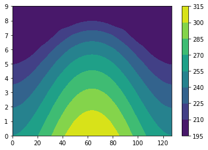
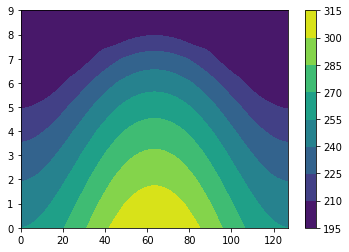
plt.figure()
cs=plt.contourf(theta_b['g'])
plt.colorbar(cs)
plt.figure()
cs=plt.contourf(psi_b['g'])
plt.colorbar(cs)
<matplotlib.colorbar.Colorbar at 0x7f7699d46550>
 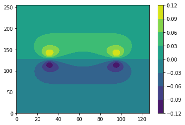
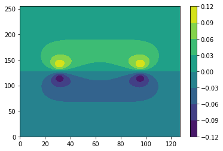
plt.figure()
cs=plt.contourf(theta_b['g'])
plt.colorbar(cs)
plt.figure()
cs=plt.contourf((-d3.div(u_b*theta_b_eq)-d3.div(u_b*theta_b)).evaluate()['g'])
plt.colorbar(cs)
<matplotlib.colorbar.Colorbar at 0x7ff283ba1d10>
 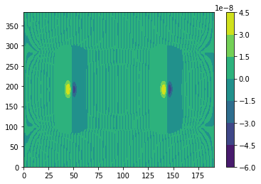
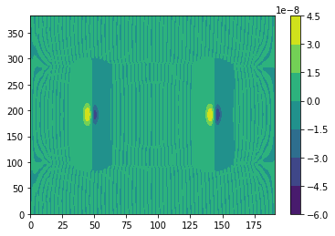
plt.figure()
cs=plt.contourf(u_b['g'][0].T)
plt.colorbar(cs)
<matplotlib.colorbar.Colorbar at 0x7f768c363b90>
plt.figure()
cs=plt.contourf(-d3.div(d3.skew(u_b)).evaluate()['g'].T)
plt.colorbar(cs)
<matplotlib.colorbar.Colorbar at 0x7f768d49d4d0>
plt.figure()
cs=plt.contourf(theta_b['g']+theta_b_eq['g'])
plt.colorbar(cs)
plt.figure()
cs=plt.contourf(((theta_200_eq+theta_800_eq)/2).evaluate()['g'])
plt.colorbar(cs)
<matplotlib.colorbar.Colorbar at 0x7f768c5bd950>


# Solver
solver = problem.build_solver(d3.RK222)
solver.stop_sim_time = stop_sim_time
# Analysis
snapshots = solver.evaluator.add_file_handler('snapshots', sim_dt=3600, max_writes=10)
snapshots.add_task(theta_c, name='theta_c')
snapshots.add_task(-d3.div(d3.skew(u_c)), name='vorticity')
# Main loop
try:
logger.info('Starting main loop')
while solver.proceed:
solver.step(timestep)
if (solver.iteration-1) % 10 == 0:
logger.info('Iteration=%i, Time=%e, dt=%e' %(solver.iteration, solver.sim_time, timestep))
except:
logger.error('Exception raised, triggering end of main loop.')
raise
finally:
solver.log_stats()
2022-05-03 15:15:51,675 subsystems 0/1 INFO :: Building subproblem matrices 1/127 (~1%) Elapsed: 0s, Remaining: 3s, Rate: 4.5e+01/s
2022-05-03 15:15:51,800 subsystems 0/1 INFO :: Building subproblem matrices 13/127 (~10%) Elapsed: 0s, Remaining: 1s, Rate: 8.8e+01/s
2022-05-03 15:15:51,920 subsystems 0/1 INFO :: Building subproblem matrices 26/127 (~20%) Elapsed: 0s, Remaining: 1s, Rate: 9.7e+01/s
2022-05-03 15:15:52,040 subsystems 0/1 INFO :: Building subproblem matrices 39/127 (~31%) Elapsed: 0s, Remaining: 1s, Rate: 1.0e+02/s
2022-05-03 15:15:52,169 subsystems 0/1 INFO :: Building subproblem matrices 52/127 (~41%) Elapsed: 1s, Remaining: 1s, Rate: 1.0e+02/s
2022-05-03 15:15:52,299 subsystems 0/1 INFO :: Building subproblem matrices 65/127 (~51%) Elapsed: 1s, Remaining: 1s, Rate: 1.0e+02/s
2022-05-03 15:15:52,419 subsystems 0/1 INFO :: Building subproblem matrices 78/127 (~61%) Elapsed: 1s, Remaining: 0s, Rate: 1.0e+02/s
2022-05-03 15:15:52,552 subsystems 0/1 INFO :: Building subproblem matrices 91/127 (~72%) Elapsed: 1s, Remaining: 0s, Rate: 1.0e+02/s
2022-05-03 15:15:52,677 subsystems 0/1 INFO :: Building subproblem matrices 104/127 (~82%) Elapsed: 1s, Remaining: 0s, Rate: 1.0e+02/s
2022-05-03 15:15:52,800 subsystems 0/1 INFO :: Building subproblem matrices 117/127 (~92%) Elapsed: 1s, Remaining: 0s, Rate: 1.0e+02/s
2022-05-03 15:15:52,899 subsystems 0/1 INFO :: Building subproblem matrices 127/127 (~100%) Elapsed: 1s, Remaining: 0s, Rate: 1.0e+02/s
2022-05-03 15:15:52,913 __main__ 0/1 INFO :: Starting main loop
2022-05-03 15:15:55,297 __main__ 0/1 ERROR :: Exception raised, triggering end of main loop.
2022-05-03 15:15:55,299 solvers 0/1 INFO :: Final iteration: 0
2022-05-03 15:15:55,305 solvers 0/1 INFO :: Final sim time: 0
2022-05-03 15:15:55,307 solvers 0/1 INFO :: Setup time (init - iter 0): 2.772 sec
2022-05-03 15:15:55,311 solvers 0/1 INFO :: Timings unavailable due because warmup did not complete.
---------------------------------------------------------------------------
RuntimeError Traceback (most recent call last)
<ipython-input-19-a85a0848f831> in <module>()
12 logger.info('Starting main loop')
13 while solver.proceed:
---> 14 solver.step(timestep)
15 if (solver.iteration-1) % 10 == 0:
16 logger.info('Iteration=%i, Time=%e, dt=%e' %(solver.iteration, solver.sim_time, timestep))
/usr/local/lib/python3.7/dist-packages/dedalus/core/solvers.py in step(self, dt)
567 # Advance using timestepper
568 wall_elapsed = wall_time - self.init_time
--> 569 self.timestepper.step(dt, wall_elapsed)
570 # Update iteration
571 self.iteration += 1
/usr/local/lib/python3.7/dist-packages/dedalus/core/timesteppers.py in step(self, dt, wall_time)
634 else:
635 sp.LHS = (sp.M_min + (k*H[i,i])*sp.L_min) @ sp.pre_right # CREATES TEMPORARY
--> 636 sp.LHS_solvers[i] = solver.matsolver(sp.LHS, solver)
637 for ss in sp.subsystems:
638 # Slice out valid subdata, skipping invalid components
/usr/local/lib/python3.7/dist-packages/dedalus/libraries/matsolvers.py in __init__(self, matrix, solver)
119
120 def __init__(self, matrix, solver=None):
--> 121 self.LU = spla.splu(matrix.T.tocsc(), permc_spec='NATURAL')
122
123 def solve(self, vector):
/usr/local/lib/python3.7/dist-packages/scipy/sparse/linalg/dsolve/linsolve.py in splu(A, permc_spec, diag_pivot_thresh, relax, panel_size, options)
324 return _superlu.gstrf(N, A.nnz, A.data, A.indices, A.indptr,
325 csc_construct_func=csc_construct_func,
--> 326 ilu=False, options=_options)
327
328
RuntimeError: Factor is exactly singular
hour
1
plt.figure()
cs=plt.contourf(d3.div(u_c*theta_b).evaluate()['g'])
plt.colorbar(cs)
plt.figure()
cs=plt.contourf(d3.div(u_c*theta_b).evaluate()['g']-(d3.div(u_c)*theta_b).evaluate()['g'])
plt.colorbar(cs)
plt.figure()
cs=plt.contourf((d3.dot(u_c,d3.grad(theta_b))).evaluate()['g'])
plt.colorbar(cs)
<matplotlib.colorbar.Colorbar at 0x7f10fce5e210>

 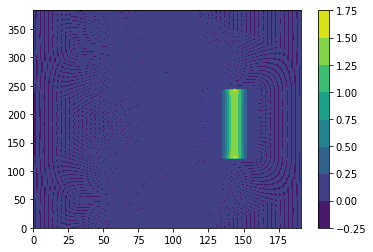
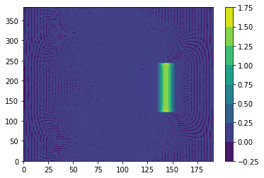
import matplotlib.pyplot as plt
plt.figure()
plt.plot(lat[0,:].T)
plt.plot(u['g'][0][200,:].T)
plt.figure()
cs=plt.contourf(u['g'][0].T)
plt.colorbar(cs)
plt.figure()
cs=plt.contourf(zcross(u).evaluate()['g'][0].T)
plt.colorbar(cs)
plt.figure()
cs=plt.contourf(-d3.div(d3.skew(u_c)).evaluate()['g'].T)
plt.colorbar(cs)
<matplotlib.colorbar.Colorbar at 0x7f2ba9947b50>
 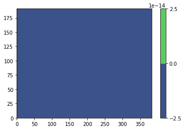
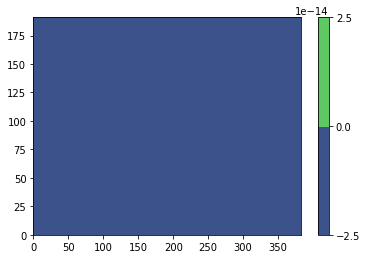
 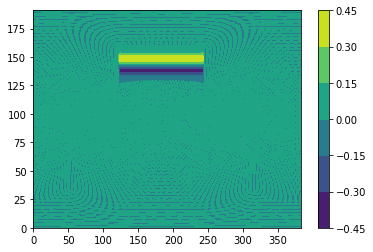
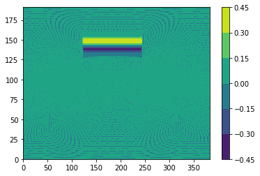
#cs=plt.contourf(lat.T)
#plt.colorbar(cs)
plt.plot(np.pi/2-theta.T)
[<matplotlib.lines.Line2D at 0x7f2baaa942d0>]

import matplotlib.pyplot as plt
# equilibrium temperature profile
p = np.arange(1000,0,-100)
PP,yy = np.meshgrid(p,theta.T)
Teq = np.zeros((np.shape(lat)[1],np.shape(p)[0]))
Teq2 = np.ones((np.shape(lat)[1],np.shape(p)[0]))*200
Teq = (315 - 60*np.cos(yy)**2-10*np.log(PP/1000)*np.sin(yy)**2)*(PP/1000)**(2/7)
Teq[Teq<200] = 200
plt.figure()
cs=plt.contourf(Teq.T)
plt.colorbar(cs)
# damping coefficient
ka = 1/40
ks = 1/4
kf = 1
k2 = (ks - ka)*((PP/1000-0.7)/(1-0.7))*np.sin(yy)**4
k2[k2<0] = 0
k_T = ka+k2
k_v = kf*(PP/1000-0.7)/(1-0.7)
k_v[k_v<0] = 0
#
theta_eq = Teq*(1000/PP)**(2/7)
theta_eq_200 = theta_eq[:,-2]
theta_eq_800 = theta_eq[:,2]
plt.figure()
cs=plt.contourf(theta_eq.T)
plt.colorbar(cs)
plt.figure()
cs=plt.contourf(k_T.T)
plt.colorbar(cs)
np.shape(theta_eq)
plt.figure()
#plt.plot(theta_eq_200)
#plt.plot((theta_eq_800+theta_eq_200)/2)
plt.plot((theta_eq_200-theta_eq_800)/2)
#T_eq['g'] = 315 - 60*np.cos(lat)**2-10
[<matplotlib.lines.Line2D at 0x7f809c1bbb50>]
 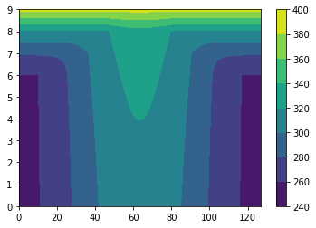
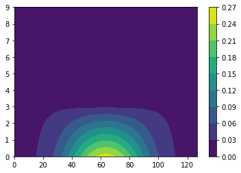
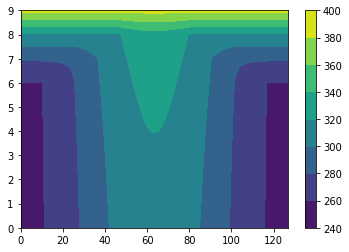
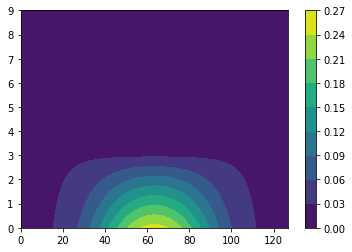

np.shape(theta_b['g'])
(256, 128)
import matplotlib.pyplot as plt
plt.contour(u['g'][1])
<matplotlib.contour.QuadContourSet at 0x7f80a70b8b10>
import matplotlib.pyplot as plt
plt.figure()
cs=plt.contourf(u['g'][1].T)
plt.colorbar(cs)
plt.figure()
cs=plt.contourf(d3.div(u).evaluate()['g'].T)
plt.colorbar(cs)
plt.figure()
#cs=plt.contourf((d3.skew(u)).evaluate()['g'][1].T)
cs=plt.contourf(-d3.div(d3.skew(u)).evaluate()['g'].T)
plt.colorbar(cs)
#d3.div(d3.skew(u)).evaluate()['g']
<matplotlib.colorbar.Colorbar at 0x7ff4812c3710>
 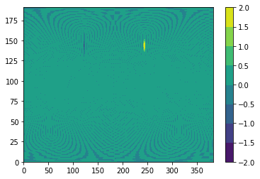
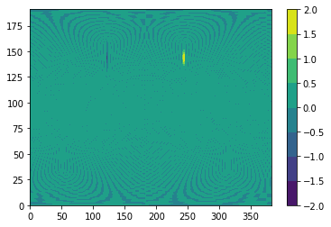
theta
array([[3.12287811, 3.09863496, 3.07424864, 3.04982997, 3.02539903,
3.00096216, 2.97652197, 2.95207974, 2.92763616, 2.90319165,
2.87874647, 2.85430079, 2.82985472, 2.80540836, 2.78096176,
2.75651496, 2.732068 , 2.70762092, 2.68317372, 2.65872643,
2.63427906, 2.60983161, 2.58538411, 2.56093656, 2.53648896,
2.51204132, 2.48759365, 2.46314594, 2.4386982 , 2.41425044,
2.38980266, 2.36535485, 2.34090703, 2.31645919, 2.29201133,
2.26756346, 2.24311558, 2.21866768, 2.19421978, 2.16977186,
2.14532393, 2.120876 , 2.09642806, 2.07198011, 2.04753216,
2.0230842 , 1.99863623, 1.97418826, 1.94974029, 1.92529231,
1.90084432, 1.87639634, 1.85194835, 1.82750035, 1.80305236,
1.77860436, 1.75415636, 1.72970836, 1.70526036, 1.68081235,
1.65636435, 1.63191634, 1.60746834, 1.58302033, 1.55857232,
1.53412432, 1.50967631, 1.4852283 , 1.4607803 , 1.4363323 ,
1.41188429, 1.38743629, 1.36298829, 1.33854029, 1.3140923 ,
1.28964431, 1.26519632, 1.24074833, 1.21630035, 1.19185237,
1.16740439, 1.14295642, 1.11850846, 1.0940605 , 1.06961254,
1.04516459, 1.02071665, 0.99626872, 0.97182079, 0.94737288,
0.92292497, 0.89847708, 0.87402919, 0.84958132, 0.82513347,
0.80068562, 0.7762378 , 0.75179 , 0.72734221, 0.70289445,
0.67844671, 0.65399901, 0.62955133, 0.60510369, 0.58065609,
0.55620854, 0.53176104, 0.5073136 , 0.48286623, 0.45841894,
0.43397174, 0.40952465, 0.38507769, 0.3606309 , 0.33618429,
0.31173793, 0.28729187, 0.26284618, 0.238401 , 0.21395649,
0.18951292, 0.16507068, 0.14063049, 0.11619362, 0.09176268,
0.06734402, 0.0429577 , 0.01871455]])
# Fields
u = dist.VectorField(coords, name='u', bases=basis)
h = dist.Field(name='h', bases=basis)
# Substitutions
zcross = lambda A: d3.MulCosine(d3.skew(A))
# Initial conditions: zonal jet
phi, theta = dist.local_grids(basis)
lat = np.pi / 2 - theta + 0*phi
umax = 80 * meter / second
lat0 = np.pi / 7
lat1 = np.pi / 2 - lat0
en = np.exp(-4 / (lat1 - lat0)**2)
jet = (lat0 <= lat) * (lat <= lat1)
u_jet = umax / en * np.exp(1 / (lat[jet] - lat0) / (lat[jet] - lat1))
u['g'][0][jet] = u_jet #g stands for grid and c stands for coefficient
import matplotlib.pyplot as plt
aa = zcross(u).evaluate()
plt.figure()
cs=plt.contourf(aa['g'][1])
plt.colorbar(cs)
plt.figure()
cs=plt.contourf(u['g'][0])
plt.colorbar(cs)
<matplotlib.colorbar.Colorbar at 0x7fea63eac410>
zcross = lambda A: d3.MulCosine(d3.skew(A))
h['g'] = 1
plt.figure()
cs=plt.contourf(d3.MulCosine(h).evaluate()['g'])
plt.colorbar(cs)
<matplotlib.colorbar.Colorbar at 0x7fea644b01d0>